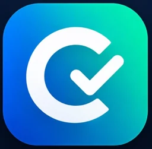

<!doctype html>
<html lang="es">
<head>
<meta charset="utf-8">
<meta name="viewport" content="width=device-width, initial-scale=1, viewport-fit=cover">
<title>CONTAITSCCH</title>
<meta name="claude:viewport-fit-sides" content="cover">
<link rel="preconnect" href="https://fonts.googleapis.com">
<link rel="preconnect" href="https://fonts.gstatic.com" crossorigin>
<link rel="stylesheet" href="https://fonts.googleapis.com/css2?family=Plus+Jakarta+Sans:wght@400;500;600;700;800&display=swap">
<link rel="stylesheet" href="https://fonts.googleapis.com/css2?family=Material+Symbols+Outlined:opsz,wght,FILL,GRAD@20..48,100..700,0..1,-50..200&icon_names=alternate_email,apartment,arrow_back,arrow_forward,auto_stories,badge,balance,cancel,check,check_circle,chevron_left,chevron_right,close,code,edit_note,emoji_events,error,expand_more,flag,history_edu,info,insights,inventory_2,key,layers,leaderboard,lightbulb,location_city,lock,lock_open,login,logout,map,mark_email_read,menu_book,military_tech,palette,pending,person,play_arrow,psychology,public,query_stats,receipt_long,refresh,replay,restart_alt,route,schedule,school,search,send,settings,stars,storefront,table_rows,task_alt,verified,warning,workspace_premium,zoom_in&display=block">
<style>
/* Estructura de Stitch (columna móvil de 480px, botones táctiles, ruta de temas)
   con la paleta del HTML del cliente: azul marino para la marca, verde azulado
   para avanzar, ámbar para el tema actual. Claro y oscuro. */
:root {
  --bg: #f6f7f9;
  --surface: #ffffff;
  --surface-alt: #eef2f5;
  --surface-sunk: #ffffff;
  --line: #dde3e9;
  --text: #1a1a1a;
  --dim: #5b6b7a;
  --faint: #8d9aa6;
  --accent: #0e7c7b;
  --accent-ink: #ffffff;
  --accent-rim: #095756;
  --accent-tint: rgba(14, 124, 123, .10);
  --accent-soft: #7fd1d0;
  --navy: #0f2a44;
  --navy-ink: #ffffff;
  --navy-dim: rgba(255, 255, 255, .72);
  --navy-rim: #071a2c;
  --amber: #f2a900;
  --amber-ink: #0f2a44;
  --amber-rim: #b97f00;
  --amber-tint: rgba(242, 169, 0, .14);
  --amber-text: #8a5d00;
  --ok: #2e7d32;
  --ok-ink: #ffffff;
  --ok-tint: rgba(46, 125, 50, .10);
  --err: #c62828;
  --err-ink: #ffffff;
  --err-tint: rgba(198, 40, 40, .08);
  --title: #0f2a44;
  --bronze: #a8581c;
  --shadow: 0 1px 2px rgba(15, 42, 68, .06), 0 4px 14px rgba(15, 42, 68, .05);
  --scrim: rgba(11, 21, 32, .88);
  --font: "Plus Jakarta Sans", "Segoe UI", system-ui, -apple-system, sans-serif;
  --r-md: 12px; --r-lg: 14px; --r-xl: 20px;
  --gutter-l: max(16px, env(safe-area-inset-left, 0px));
  --gutter-r: max(16px, env(safe-area-inset-right, 0px));
}
@media (prefers-color-scheme: dark) {
  :root:not([data-theme="light"]) {
    --bg: #0b1520; --surface: #122334; --surface-alt: #1a2f45; --surface-sunk: #0e1b2a; --line: #24405a;
    --text: #eef3f7; --dim: #9db0c0; --faint: #6f879c; --title: #eef3f7; --bronze: #e39a62;
    --accent: #2ba8a7; --accent-ink: #062423; --accent-rim: #1b7372; --accent-tint: rgba(43, 168, 167, .16); --accent-soft: #7fd1d0;
    --navy: #0a1e33; --navy-ink: #eef3f7; --navy-dim: rgba(238, 243, 247, .7); --navy-rim: #06121f;
    --amber: #f2a900; --amber-ink: #0b1520; --amber-rim: #a87400; --amber-tint: rgba(242, 169, 0, .16); --amber-text: #f2c14e;
    --ok: #66bb6a; --ok-ink: #0b1520; --ok-tint: rgba(102, 187, 106, .14);
    --err: #ef5350; --err-ink: #0b1520; --err-tint: rgba(239, 83, 80, .14);
    --shadow: none; --scrim: rgba(4, 10, 16, .9);
    color-scheme: dark;
  }
}
:root[data-theme="dark"] {
  --bg: #0b1520; --surface: #122334; --surface-alt: #1a2f45; --surface-sunk: #0e1b2a; --line: #24405a;
  --text: #eef3f7; --dim: #9db0c0; --faint: #6f879c; --title: #eef3f7; --bronze: #e39a62;
  --accent: #2ba8a7; --accent-ink: #062423; --accent-rim: #1b7372; --accent-tint: rgba(43, 168, 167, .16); --accent-soft: #7fd1d0;
  --navy: #0a1e33; --navy-ink: #eef3f7; --navy-dim: rgba(238, 243, 247, .7); --navy-rim: #06121f;
  --amber: #f2a900; --amber-ink: #0b1520; --amber-rim: #a87400; --amber-tint: rgba(242, 169, 0, .16); --amber-text: #f2c14e;
  --ok: #66bb6a; --ok-ink: #0b1520; --ok-tint: rgba(102, 187, 106, .14);
  --err: #ef5350; --err-ink: #0b1520; --err-tint: rgba(239, 83, 80, .14);
  --shadow: none; --scrim: rgba(4, 10, 16, .9);
  color-scheme: dark;
}
* { box-sizing: border-box; }
html, body { min-height: 100%; }
body {
  margin: 0; background: var(--bg); color: var(--text);
  font-family: var(--font); font-size: 15px; line-height: 1.5;
  -webkit-font-smoothing: antialiased; -webkit-tap-highlight-color: transparent;
}
body::before { content: ""; position: fixed; inset: 0 0 auto; height: env(safe-area-inset-top, 0px); z-index: 30; background: var(--navy); }
button { font: inherit; color: inherit; background: none; border: 0; cursor: pointer; padding: 0; }
button:disabled { cursor: default; }
input { font: inherit; color: inherit; }
:focus-visible { outline: 3px solid var(--amber); outline-offset: 2px; border-radius: 10px; }
h1, h2, h3, p { margin: 0; }
h1, h2, h3 { text-wrap: balance; letter-spacing: -.01em; }
.num { font-variant-numeric: tabular-nums lining-nums; }
.ms {
  font-family: "Material Symbols Outlined"; font-weight: normal; font-style: normal;
  font-size: 22px; line-height: 1; letter-spacing: normal; text-transform: none;
  display: inline-block; white-space: nowrap; direction: ltr; flex: none;
  font-variation-settings: "FILL" 0, "wght" 500, "GRAD" 0, "opsz" 24;
  overflow: hidden; width: 1em; height: 1em; -webkit-font-smoothing: antialiased;
}
.ms.fill { font-variation-settings: "FILL" 1, "wght" 600, "GRAD" 0, "opsz" 24; }
.sr { position: absolute; width: 1px; height: 1px; overflow: hidden; clip: rect(0 0 0 0); white-space: nowrap; }
.c-accent { color: var(--accent); } .c-amber { color: var(--amber-text); } .c-dim { color: var(--dim); }

/* ---------- Estructura ---------- */
.shell { max-width: 480px; margin: 0 auto; min-height: 100vh; position: relative; }
.pad { padding-left: var(--gutter-l); padding-right: var(--gutter-r); }
main.pad { padding-block: 20px 120px; display: flex; flex-direction: column; gap: 22px; }
main.pad.no-tabs { padding-bottom: 40px; }

.topbar { position: sticky; top: env(safe-area-inset-top, 0px); z-index: 20; background: var(--navy); color: var(--navy-ink); }
.topbar .in { display: flex; align-items: center; gap: 10px; padding-block: 12px; min-height: 64px; }
.brand { display: flex; align-items: center; gap: 12px; min-width: 0; flex: 1; }
.brand img { width: 40px; height: 40px; border-radius: 11px; flex: none; }
.brand .bt { min-width: 0; }
.brand b { display: block; font-weight: 800; font-size: 17px; line-height: 1.2; letter-spacing: .01em; }
.brand small { display: block; font-size: 12px; font-weight: 700; color: var(--amber); line-height: 1.25; white-space: nowrap; overflow: hidden; text-overflow: ellipsis; }
.avatar-btn { width: 40px; height: 40px; border-radius: 50%; background: var(--amber); color: var(--amber-ink); display: grid; place-items: center; font-weight: 800; font-size: 13px; flex: none; }
.icon-btn { width: 44px; height: 44px; border-radius: 50%; display: grid; place-items: center; flex: none; color: inherit; }
.topbar .icon-btn:hover { background: rgba(255,255,255,.1); }
.icon-btn.boxed { background: rgba(255,255,255,.12); }
.topbar .step-txt { display: flex; align-items: center; gap: 8px; font-weight: 800; flex: 1; min-width: 0; white-space: nowrap; overflow: hidden; text-overflow: ellipsis; }
.topbar .count { font-weight: 800; font-size: 14px; color: var(--navy-dim); flex: none; }
.topbar .bar { background: rgba(255,255,255,.16); }
.topbar-progress { padding-bottom: 12px; }

.tabbar { position: fixed; left: 0; right: 0; bottom: 0; z-index: 25; background: var(--surface); border-top: 1px solid var(--line); padding-bottom: env(safe-area-inset-bottom, 0px); }
.tabbar .in { max-width: 480px; margin: 0 auto; display: grid; grid-template-columns: repeat(5, 1fr); }
.tab { display: flex; flex-direction: column; align-items: center; gap: 3px; padding: 10px 2px; font-size: 12px; font-weight: 600; color: var(--dim); position: relative; }
.tab .ms { font-size: 24px; }
.tab[aria-current="page"] { color: var(--accent); font-weight: 800; }
.tab[aria-current="page"] .ms { font-variation-settings: "FILL" 1, "wght" 600, "GRAD" 0, "opsz" 24; }
.tab[aria-current="page"]::before { content: ""; position: absolute; top: 0; left: 24%; right: 24%; height: 3px; border-radius: 0 0 3px 3px; background: var(--accent); }

/* ---------- Componentes base ---------- */
.card { background: var(--surface); border: 1px solid var(--line); border-radius: var(--r-xl); padding: 20px; box-shadow: var(--shadow); }
.card.flat { box-shadow: none; }
.eyebrow { font-size: 12px; font-weight: 800; letter-spacing: .08em; text-transform: uppercase; color: var(--dim); }
.sec-head { display: flex; align-items: baseline; justify-content: space-between; gap: 12px; }
.sec-head h2 { font-size: 21px; font-weight: 800; }
.sec-head span { font-size: 13px; font-weight: 700; color: var(--dim); white-space: nowrap; }
.muted { color: var(--dim); }
.small { font-size: 13px; }
.chip { display: inline-flex; align-items: center; gap: 4px; height: 24px; padding: 0 10px; border-radius: 999px; font-size: 11.5px; font-weight: 800; letter-spacing: .06em; text-transform: uppercase; background: var(--surface-alt); color: var(--dim); white-space: nowrap; }
.chip .ms { font-size: 15px; }
.chip.accent { background: var(--accent-tint); color: var(--accent); }
.chip.navy { background: var(--navy); color: var(--navy-ink); }

.btn {
  display: inline-flex; align-items: center; justify-content: center; gap: 8px;
  min-height: 56px; padding: 0 22px; border-radius: var(--r-lg); width: 100%;
  font-weight: 800; font-size: 17px; letter-spacing: .01em;
  border-bottom: 4px solid transparent; transition: transform .08s, border-bottom-width .08s, filter .15s;
}
.btn:not(:disabled):active { transform: translateY(3px); border-bottom-width: 1px; }
.btn:not(:disabled):hover { filter: brightness(1.06); }
.btn .ms { font-size: 22px; }
.btn.primary { background: var(--accent); color: var(--accent-ink); border-bottom-color: var(--accent-rim); }
.btn.navy { background: var(--navy); color: var(--navy-ink); border-bottom-color: var(--navy-rim); }
.btn.amber { background: var(--amber); color: var(--amber-ink); border-bottom-color: var(--amber-rim); }
.btn.danger { background: var(--err); color: var(--err-ink); border-bottom-color: var(--err); filter: brightness(.95); }
.btn.ghost { background: var(--surface); color: var(--text); border: 2px solid var(--line); border-bottom-width: 4px; }
.btn.ghost:not(:disabled):active { border-bottom-width: 2px; }
.btn:disabled { background: var(--surface-alt); color: var(--faint); border-bottom-color: var(--line); }
.btn.sq { width: 64px; padding: 0; flex: none; }
.btn.sm { min-height: 44px; font-size: 15px; padding: 0 16px; border-bottom-width: 3px; width: auto; }
.link { display: inline-flex; align-items: center; gap: 6px; font-weight: 700; color: var(--accent); padding: 10px 4px; justify-content: center; }
.btn-row { display: flex; gap: 12px; }
.actions { display: flex; flex-direction: column; gap: 12px; margin-top: 8px; }

.bar { height: 12px; border-radius: 999px; background: var(--surface-alt); overflow: hidden; position: relative; }
.bar.thin { height: 8px; }
.bar > i { display: block; height: 100%; border-radius: inherit; background: var(--accent); transition: width .5s ease; }
.bar.amber > i { background: var(--amber); }
.bar-meta { display: flex; justify-content: space-between; gap: 12px; font-size: 13px; font-weight: 700; margin-top: 10px; }

/* ---------- Acceso ---------- */
.auth-band { background: var(--navy); color: var(--navy-ink); padding-block: 20px 76px; }
.auth-band .chip { background: rgba(255,255,255,.12); color: var(--navy-ink); }
.auth { display: flex; flex-direction: column; gap: 20px; padding-block: 0 40px; margin-top: -56px; }
.auth-hero { text-align: center; display: flex; flex-direction: column; align-items: center; gap: 10px; margin-top: 18px; }
.logo-ring { position: relative; width: 112px; height: 112px; }
.logo-ring img { width: 100%; height: 100%; border-radius: 28px; object-fit: cover; display: block; }
.logo-ring .badge { position: absolute; right: -8px; bottom: -8px; width: 38px; height: 38px; border-radius: 50%; background: var(--amber); color: var(--amber-ink); display: grid; place-items: center; border: 4px solid var(--navy); }
.auth-hero h1 { font-size: 28px; line-height: 1.15; font-weight: 800; margin-top: 6px; }
.auth-hero p { color: var(--navy-dim); max-width: 34ch; }
.auth-hero p.slogan { color: var(--amber); font-weight: 800; font-size: 14px; }
.stepper { display: grid; grid-template-columns: 1fr 1fr; gap: 6px; background: var(--surface-alt); padding: 6px; border-radius: var(--r-lg); }
.stepper div { display: flex; align-items: center; justify-content: center; gap: 8px; min-height: 46px; border-radius: 10px; font-weight: 700; color: var(--dim); }
.stepper div i { font-style: normal; width: 26px; height: 26px; border-radius: 50%; display: grid; place-items: center; background: var(--surface); font-size: 13px; }
.stepper div i .ms { font-size: 16px; }
.stepper div.on { background: var(--navy); color: var(--navy-ink); }
.stepper div.on i { background: var(--amber); color: var(--amber-ink); }
.stepper div.ok i { background: var(--accent); color: var(--accent-ink); }
.form { display: flex; flex-direction: column; gap: 14px; }
.field label { display: block; font-size: 13px; font-weight: 700; color: var(--dim); margin-bottom: 6px; }
.input-wrap { display: flex; align-items: center; gap: 10px; background: var(--surface-sunk); border: 2px solid var(--line); border-radius: 12px; padding: 0 14px; min-height: 54px; transition: border-color .15s; }
.input-wrap:focus-within { border-color: var(--accent); }
.input-wrap .ms { color: var(--faint); }
.input-wrap input { flex: 1; min-width: 0; background: none; border: 0; outline: none; font-size: 16px; min-height: 50px; }
.input-wrap input::placeholder { color: var(--faint); }
.form-error { display: flex; gap: 8px; align-items: flex-start; color: var(--err); font-size: 14px; font-weight: 600; background: var(--err-tint); border-radius: 12px; padding: 10px 12px; }
.verify-head { text-align: center; display: flex; flex-direction: column; align-items: center; gap: 8px; }
.verify-icon { width: 84px; height: 84px; border-radius: 50%; background: var(--accent-tint); color: var(--accent); display: grid; place-items: center; }
.verify-icon .ms { font-size: 42px; }
.verify-head h2 { font-size: 22px; font-weight: 800; }
.otp { display: grid; grid-template-columns: repeat(6, 1fr); gap: 8px; }
.otp input { width: 100%; aspect-ratio: 4 / 5; max-width: 100%; text-align: center; font-size: 24px; font-weight: 800; background: var(--surface-sunk); border: 2px solid var(--line); border-radius: 12px; outline: none; }
.otp input:focus { border-color: var(--accent); }
.demo-code { display: flex; gap: 10px; align-items: center; background: var(--amber-tint); color: var(--amber-text); border-radius: 12px; padding: 10px 12px; font-size: 13.5px; font-weight: 600; }
.demo-code b { font-size: 16px; letter-spacing: .18em; }
.timer { align-self: center; display: inline-flex; gap: 6px; align-items: center; background: var(--surface-alt); border-radius: 999px; padding: 8px 16px; font-weight: 700; font-size: 14px; }
.auth-switch { text-align: center; display: flex; flex-direction: column; gap: 2px; color: var(--dim); }
.auth-switch button { font-weight: 800; color: var(--accent); display: inline-flex; gap: 6px; align-items: center; justify-content: center; padding: 6px; }
.perks { display: grid; grid-template-columns: repeat(3, 1fr); background: var(--surface); border: 1px solid var(--line); border-radius: var(--r-lg); padding: 14px 4px; }
.perks div { display: flex; flex-direction: column; align-items: center; gap: 6px; font-size: 12.5px; font-weight: 600; text-align: center; color: var(--dim); padding: 0 6px; }
.perks div + div { border-left: 1px solid var(--line); }
.perks .ms { font-size: 26px; color: var(--accent); }

/* ---------- Inicio / Niveles ---------- */
.hello { display: flex; flex-direction: column; gap: 4px; }
.hello h1 { font-size: 26px; font-weight: 800; line-height: 1.2; color: var(--title); }
.hello p { color: var(--dim); }
.stats { display: grid; grid-template-columns: repeat(3, 1fr); gap: 8px; }
.stat { background: var(--surface); border: 1px solid var(--line); border-radius: 14px; padding: 12px; display: flex; flex-direction: column; gap: 6px; min-width: 0; box-shadow: var(--shadow); }
.stat .ms { font-size: 24px; color: var(--accent); }
.stat b { display: block; font-size: 17px; font-weight: 800; line-height: 1.15; overflow-wrap: anywhere; }
.stat small { display: block; font-size: 12px; color: var(--dim); font-weight: 600; line-height: 1.3; }
.prog-card .top { display: flex; align-items: center; gap: 12px; margin-bottom: 16px; }
.icon-tile { width: 44px; height: 44px; border-radius: 12px; display: grid; place-items: center; flex: none; background: var(--accent-tint); color: var(--accent); }
.icon-tile.amber { background: var(--amber-tint); color: var(--amber-text); }
.icon-tile.navy { background: var(--navy); color: var(--navy-ink); }
.icon-tile.solid { background: var(--accent); color: var(--accent-ink); }
.icon-tile.locked { background: var(--surface-alt); color: var(--faint); }
.icon-tile.err { background: var(--err-tint); color: var(--err); }
.icon-tile.big { width: 56px; height: 56px; border-radius: 16px; }
.icon-tile.big .ms { font-size: 30px; }
.prog-card h3 { font-size: 17px; font-weight: 800; line-height: 1.25; }
.prog-card .pct { margin-left: auto; font-size: 26px; font-weight: 800; color: var(--accent); }

.next-card { background: var(--navy); color: var(--navy-ink); }
.next-card .eyebrow { color: var(--amber); }
.next-card .t { font-size: 19px; font-weight: 800; line-height: 1.3; margin: 6px 0 16px; }

.tip { display: flex; gap: 14px; align-items: flex-start; }
.tip .body { min-width: 0; flex: 1; }
.tip .body p.t { font-weight: 700; font-size: 16px; line-height: 1.4; margin-top: 4px; }
.tip .body p.d { color: var(--dim); font-size: 14px; margin-top: 6px; }
.tip .icon-btn { color: var(--dim); background: var(--surface-alt); }

.levels { display: flex; flex-direction: column; gap: 14px; }
.level { display: flex; flex-direction: column; gap: 14px; }
.level .head { display: flex; gap: 14px; align-items: flex-start; }
.level .head .txt { min-width: 0; flex: 1; }
.level .head .meta { display: flex; gap: 8px; align-items: center; flex-wrap: wrap; margin-bottom: 6px; font-size: 13px; font-weight: 600; color: var(--dim); }
.level h3 { font-size: 20px; font-weight: 800; line-height: 1.2; color: var(--title); }
.level .sub { color: var(--dim); font-size: 15px; margin-top: 2px; }
.level .state-ic { color: var(--faint); }
.level .state-ic.ok { color: var(--accent); }
.level .desc { font-size: 14.5px; color: var(--dim); }
.level.locked { background: var(--surface-alt); box-shadow: none; }
.level.locked h3, .level.locked .sub { color: var(--faint); }
.level.locked .desc { display: none; }
.lock-note { display: flex; gap: 10px; align-items: flex-start; font-size: 13.5px; font-weight: 600; color: var(--amber-text); }
.lock-note .ms { font-size: 20px; }

.about-row { display: flex; align-items: center; gap: 14px; text-align: left; width: 100%; }
.about-row .txt { min-width: 0; flex: 1; }
.about-row b { font-size: 16.5px; font-weight: 800; display: block; }
.about-row .d { font-size: 14px; color: var(--dim); display: block; }
.round-go { width: 44px; height: 44px; border-radius: 50%; background: var(--surface-alt); display: grid; place-items: center; flex: none; }

/* ---------- Ruta (Aprender) ---------- */
.lv-tabs { display: flex; gap: 8px; overflow-x: auto; scrollbar-width: none; padding-bottom: 2px; margin-inline: calc(var(--gutter-l) * -1) calc(var(--gutter-r) * -1); padding-inline: var(--gutter-l) var(--gutter-r); }
.lv-tabs::-webkit-scrollbar { display: none; }
.lv-tab { flex: none; display: inline-flex; align-items: center; gap: 6px; height: 40px; padding: 0 14px; border-radius: 999px; background: var(--surface); border: 1px solid var(--line); border-bottom-width: 3px; font-weight: 700; font-size: 14px; color: var(--dim); }
.lv-tab .ms { font-size: 17px; }
.lv-tab[aria-pressed="true"] { background: var(--navy); color: var(--navy-ink); border-color: var(--navy-rim); }
.lv-tab.done .ms { color: var(--accent); }
.lv-tab[aria-pressed="true"].done .ms { color: var(--accent-soft); }
.mod-card { background: var(--navy); color: var(--navy-ink); }
.mod-card .eyebrow { display: flex; align-items: center; gap: 6px; color: var(--amber); }
.mod-card .chip { background: rgba(255,255,255,.12); color: var(--navy-ink); }
.mod-card h2 { font-size: 21px; font-weight: 800; line-height: 1.25; margin-top: 6px; }
.mod-card p.m { color: var(--navy-dim); font-size: 14px; margin: 6px 0 16px; }
.mod-card .row1 { display: flex; justify-content: space-between; align-items: center; gap: 8px; }
.mod-card .bar { background: rgba(255,255,255,.14); }
.mod-card .bar > i { background: var(--amber); }
.mod-card .bar-meta span:last-child { color: var(--amber); }

.path { position: relative; width: 100%; }
.path svg { position: absolute; inset: 0; width: 100%; height: 100%; overflow: visible; }
.path svg path { fill: none; stroke-linecap: round; vector-effect: non-scaling-stroke; }
.path .seg-done { stroke: var(--accent); stroke-width: 9; }
.path .seg-todo { stroke: var(--line); stroke-width: 9; stroke-dasharray: 14 12; }
.node-wrap { position: absolute; transform: translate(-50%, -50%); display: flex; flex-direction: column; align-items: center; gap: 10px; width: 210px; }
.node { width: 76px; height: 76px; border-radius: 50%; display: grid; place-items: center; position: relative; border-bottom: 6px solid transparent; transition: transform .08s; }
.node .ms { font-size: 38px; }
.node.done { background: var(--accent); color: var(--accent-ink); border-bottom-color: var(--accent-rim); }
.node.current { width: 96px; height: 96px; background: var(--amber); color: var(--amber-ink); border-bottom-color: var(--amber-rim); box-shadow: 0 0 0 10px var(--amber-tint); }
.node.current .ms { font-size: 44px; }
.node.retry { width: 92px; height: 92px; background: var(--surface); color: var(--err); border: 3px solid var(--err); border-bottom-width: 7px; box-shadow: 0 0 0 10px var(--err-tint); }
.node.retry .ms { font-size: 40px; }
.node.locked { background: var(--surface-alt); color: var(--faint); border-bottom-color: var(--line); cursor: default; }
.node.locked .ms { font-size: 30px; }
.node:not(.locked):active { transform: translateY(4px); border-bottom-width: 2px; }
@media (prefers-reduced-motion: no-preference) {
  .node.current { animation: pulse 2.2s ease-in-out infinite; }
  @keyframes pulse { 50% { box-shadow: 0 0 0 16px var(--amber-tint); } }
  .bubble { animation: bob 2s ease-in-out infinite; }
  @keyframes bob { 50% { transform: translateY(-4px); } }
}
.node-label { font-size: 13px; font-weight: 700; text-align: center; background: var(--surface); border: 1px solid var(--line); border-radius: 999px; padding: 5px 12px; line-height: 1.3; max-width: 100%; }
.node-label.current { color: var(--amber-text); border-color: var(--amber); font-weight: 800; }
.node-label.retry { color: var(--err); border-color: var(--err); font-weight: 800; }
.node-label.locked { color: var(--faint); background: var(--bg); }
.bubble { position: absolute; bottom: calc(100% + 6px); white-space: nowrap; background: var(--navy); color: var(--navy-ink); font-weight: 800; font-size: 13px; padding: 6px 12px; border-radius: 999px; display: inline-flex; gap: 4px; align-items: center; }
.bubble .ms { font-size: 16px; color: var(--amber); }
.bubble.err { background: var(--err); color: var(--err-ink); }
.bubble.err .ms { color: inherit; }
.goal { width: 88px; height: 88px; border-radius: 22px; display: grid; place-items: center; position: relative; background: var(--surface-alt); color: var(--faint); border-bottom: 6px solid var(--line); }
.goal .ms { font-size: 40px; }
.goal.ready { background: var(--navy); color: var(--amber); border-bottom-color: var(--navy-rim); }
.goal .lk { position: absolute; top: -8px; right: -8px; width: 28px; height: 28px; border-radius: 50%; background: var(--surface); border: 1px solid var(--line); color: var(--dim); display: grid; place-items: center; }
.goal .lk .ms { font-size: 16px; }
.goal-label { text-align: center; }
.goal-label b { display: inline-flex; gap: 4px; align-items: center; color: var(--text); font-size: 14px; font-weight: 800; }
.goal-label b .ms { font-size: 17px; color: var(--amber-text); }
.goal-label > span { display: block; font-size: 12.5px; color: var(--dim); }

.continue-bar { position: fixed; left: 0; right: 0; z-index: 22; bottom: calc(66px + env(safe-area-inset-bottom, 0px)); pointer-events: none; }
.continue-bar .in { max-width: 480px; margin: 0 auto; padding-left: var(--gutter-l); padding-right: var(--gutter-r); padding-bottom: 10px; }
.continue-bar .box { pointer-events: auto; display: flex; gap: 12px; align-items: center; background: var(--navy); color: var(--navy-ink); border-radius: 18px; padding: 10px; box-shadow: 0 8px 30px rgba(11, 21, 32, .3); }
.continue-bar .box .icon-tile { background: var(--amber); color: var(--amber-ink); }
.continue-bar .box .icon-tile.err { background: var(--err); color: var(--err-ink); }
.continue-bar .txt { min-width: 0; flex: 1; }
.continue-bar small { display: block; font-size: 12px; font-weight: 700; color: var(--amber); }
.continue-bar b { display: block; font-size: 15px; font-weight: 800; white-space: nowrap; overflow: hidden; text-overflow: ellipsis; }

/* ---------- Tema ---------- */
.crumb { display: inline-flex; gap: 6px; align-items: center; background: var(--surface-alt); border-radius: 999px; padding: 6px 12px; font-size: 12px; font-weight: 800; letter-spacing: .05em; text-transform: uppercase; align-self: flex-start; max-width: 100%; color: var(--dim); }
.crumb .ms { color: var(--accent); font-size: 18px; }
.lesson-title { font-size: 29px; line-height: 1.15; font-weight: 800; color: var(--title); }
.lead { font-size: 16.5px; color: var(--dim); line-height: 1.6; }
.prose { display: flex; flex-direction: column; gap: 14px; font-size: 16px; line-height: 1.7; max-width: 65ch; }
.figure { border-radius: var(--r-xl); overflow: hidden; background: var(--surface); position: relative; display: block; width: 100%; border: 1px solid var(--line); }
.figure img { display: block; width: 100%; height: auto; aspect-ratio: 3 / 2; object-fit: cover; }
.figure .zoom { position: absolute; right: 10px; bottom: 10px; display: inline-flex; gap: 6px; align-items: center; background: var(--navy); color: var(--navy-ink); border-radius: 999px; padding: 6px 12px; font-size: 13px; font-weight: 700; }
.figure .zoom .ms { font-size: 18px; }
.objective { display: flex; gap: 14px; }
.objective b { display: block; font-weight: 800; font-size: 16px; margin-bottom: 4px; }
.example h3 { font-size: 18px; font-weight: 800; margin: 2px 0 14px; }
.steps { list-style: none; margin: 0; padding: 0; display: flex; flex-direction: column; counter-reset: s; }
.steps li { display: grid; grid-template-columns: 32px 1fr; gap: 12px; padding-bottom: 16px; position: relative; counter-increment: s; font-size: 15px; line-height: 1.55; }
.steps li::before { content: counter(s); width: 32px; height: 32px; border-radius: 50%; background: var(--accent-tint); display: grid; place-items: center; font-weight: 800; font-size: 14px; color: var(--accent); }
.steps li:not(:last-child)::after { content: ""; position: absolute; left: 15px; top: 36px; bottom: 4px; width: 2px; background: var(--line); }
.steps li:last-child::before { background: var(--accent); color: var(--accent-ink); }
.callout { display: flex; gap: 14px; align-items: flex-start; }
.callout .txt { min-width: 0; flex: 1; }
.callout b.h { display: block; font-size: 16px; font-weight: 800; margin-bottom: 4px; }
.callout p { font-size: 15px; color: var(--dim); line-height: 1.55; }
.callout.key { background: var(--amber-tint); border-color: transparent; box-shadow: none; }
.callout.warn { background: var(--err-tint); border-color: transparent; box-shadow: none; }
.callout.task { border: 2px dashed var(--line); background: transparent; box-shadow: none; }
.lesson-actions { display: flex; gap: 12px; margin-top: 8px; }
.retake-note { display: flex; gap: 12px; align-items: flex-start; background: var(--err-tint); color: var(--err); border-radius: var(--r-lg); padding: 12px 14px; font-weight: 600; font-size: 14px; }

.lightbox { position: fixed; inset: 0; z-index: 60; background: var(--scrim); display: grid; place-items: center; padding: max(16px, env(safe-area-inset-top, 0px)) var(--gutter-r) max(16px, env(safe-area-inset-bottom, 0px)) var(--gutter-l); }
.lightbox .frame { width: 100%; max-width: 1100px; max-height: 100%; overflow: auto; border-radius: 16px; }
.lightbox img { display: block; width: 100%; height: auto; }
.lightbox .close { position: fixed; top: calc(12px + env(safe-area-inset-top, 0px)); right: calc(12px + env(safe-area-inset-right, 0px)); background: var(--surface); color: var(--text); }

/* ---------- Ejercicio ---------- */
.q-head { display: flex; gap: 14px; align-items: center; }
.q-head .txt { min-width: 0; }
.q-head h1 { font-size: 22px; font-weight: 800; line-height: 1.2; color: var(--title); }
.q-text { font-size: 18px; line-height: 1.5; font-weight: 600; }
.opts { display: flex; flex-direction: column; gap: 10px; }
.opt { display: flex; align-items: center; gap: 14px; width: 100%; text-align: left; background: var(--surface); border: 2px solid var(--line); border-bottom-width: 4px; border-radius: 16px; padding: 14px 16px; min-height: 68px; transition: border-color .12s, background .12s; }
.opt .letter { width: 40px; height: 40px; border-radius: 12px; background: var(--surface-alt); display: grid; place-items: center; font-weight: 800; flex: none; color: var(--dim); }
.opt .t { flex: 1; min-width: 0; font-size: 16px; font-weight: 600; line-height: 1.4; }
.opt .mark { flex: none; display: none; }
.opt:not(:disabled):hover { border-color: var(--accent-soft); }
.opt.sel { border-color: var(--accent); background: var(--accent-tint); }
.opt.sel .letter { background: var(--accent); color: var(--accent-ink); }
.opt.right { border-color: var(--ok); background: var(--ok-tint); }
.opt.right .letter { background: var(--ok); color: var(--ok-ink); }
.opt.right .mark { display: block; color: var(--ok); }
.opt.wrong { border-color: var(--err); background: var(--err-tint); }
.opt.wrong .letter { background: var(--err); color: var(--err-ink); }
.opt.wrong .mark { display: block; color: var(--err); }
.opt.faded { opacity: .5; }
.feedback { border-radius: var(--r-xl); padding: 18px; display: flex; flex-direction: column; gap: 6px; }
.feedback.ok { background: var(--ok); color: var(--ok-ink); }
.feedback.bad { background: var(--err); color: var(--err-ink); }
.feedback .fh { display: flex; align-items: center; gap: 10px; }
.feedback .fh b { font-size: 21px; font-weight: 800; flex: 1; }
.feedback .fh .ms { font-size: 28px; }
.feedback p { font-size: 15px; line-height: 1.5; }
.sticky-act { position: sticky; bottom: 0; padding-block: 12px max(16px, env(safe-area-inset-bottom, 0px)); background: linear-gradient(transparent, var(--bg) 30%); display: flex; flex-direction: column; gap: 12px; }

/* ---------- Resultado ---------- */
.result { text-align: center; display: flex; flex-direction: column; align-items: center; gap: 14px; padding-top: 12px; }
.seal { width: 120px; height: 120px; border-radius: 50%; display: grid; place-items: center; border-bottom: 8px solid transparent; }
.seal .ms { font-size: 60px; }
.seal.pass { background: var(--accent); color: var(--accent-ink); border-bottom-color: var(--accent-rim); box-shadow: 0 0 0 12px var(--accent-tint); }
.seal.fail { background: var(--surface); color: var(--err); border: 3px solid var(--err); border-bottom-width: 8px; box-shadow: 0 0 0 12px var(--err-tint); }
.result h1 { font-size: 28px; font-weight: 800; color: var(--title); }
.result p.s { color: var(--dim); max-width: 36ch; }
.result p.s b { color: var(--text); }
.r-stats { display: grid; grid-template-columns: repeat(3, 1fr); gap: 10px; width: 100%; }
.r-stat { border-radius: 16px; background: var(--surface); border: 1px solid var(--line); padding: 12px 6px; }
.r-stat small { display: block; font-size: 11px; font-weight: 800; letter-spacing: .06em; text-transform: uppercase; color: var(--dim); }
.r-stat b { display: block; font-size: 24px; font-weight: 800; margin-top: 4px; }
.r-stat.good b { color: var(--accent); } .r-stat.bad b { color: var(--err); }
.unlock { display: flex; gap: 12px; align-items: center; text-align: left; width: 100%; }

/* ---------- Glosario ---------- */
.search { position: sticky; top: calc(64px + env(safe-area-inset-top, 0px)); z-index: 5; background: var(--bg); padding-block: 4px 6px; }
.terms { display: flex; flex-direction: column; gap: 18px; }
.letter-group h3 { font-size: 13px; font-weight: 800; color: var(--accent); letter-spacing: .1em; margin-bottom: 8px; }
.letter-group .list { display: flex; flex-direction: column; gap: 8px; }
.term { background: var(--surface); border: 1px solid var(--line); border-radius: var(--r-lg); padding: 14px 16px; }
.term b { display: block; font-size: 16px; font-weight: 800; }
.term p { color: var(--dim); font-size: 14.5px; margin-top: 2px; }
.empty { text-align: center; color: var(--dim); padding: 30px 10px; }

/* ---------- Perfil / Conoce ---------- */
.profile { display: flex; gap: 16px; align-items: center; background: var(--navy); color: var(--navy-ink); }
.profile .av { width: 64px; height: 64px; border-radius: 50%; background: var(--amber); color: var(--amber-ink); display: grid; place-items: center; font-weight: 800; font-size: 22px; flex: none; }
.profile .txt { min-width: 0; }
.profile b { font-size: 20px; font-weight: 800; display: block; }
.profile .txt > span { color: var(--navy-dim); font-size: 14px; display: block; overflow: hidden; text-overflow: ellipsis; white-space: nowrap; }
.profile .txt > span.lvl { color: var(--amber); font-weight: 700; margin-top: 4px; white-space: normal; }
.lv-progress { display: flex; flex-direction: column; gap: 14px; }
.lv-progress .r { display: grid; grid-template-columns: 64px 1fr 40px; gap: 12px; align-items: center; font-size: 14px; font-weight: 700; }
.lv-progress .r span:last-child { text-align: right; color: var(--dim); }
.menu { display: flex; flex-direction: column; background: var(--surface); border: 1px solid var(--line); border-radius: var(--r-xl); overflow: hidden; }
.menu button { display: flex; align-items: center; gap: 14px; padding: 16px 18px; text-align: left; font-weight: 700; width: 100%; }
.menu button + button { border-top: 1px solid var(--line); }
.menu button .t { flex: 1; }
.menu button.danger { color: var(--err); }
.confirm { display: flex; flex-direction: column; gap: 12px; }
.fine { font-size: 12.5px; color: var(--faint); line-height: 1.5; }

.hero-card { background: var(--navy); color: var(--navy-ink); border-radius: var(--r-xl); padding: 24px 20px; text-align: center; display: flex; flex-direction: column; align-items: center; gap: 10px; }
.hero-card img { width: 96px; height: 96px; border-radius: 22px; }
.hero-card h1 { font-size: 28px; font-weight: 800; letter-spacing: .01em; }
.hero-card .slogan { color: var(--amber); font-weight: 800; }
.feat { display: grid; grid-template-columns: repeat(3, 1fr); gap: 8px; width: 100%; margin-top: 8px; }
.feat div { background: rgba(255,255,255,.08); border-radius: 14px; padding: 12px 6px; display: flex; flex-direction: column; align-items: center; gap: 4px; font-size: 12.5px; font-weight: 700; color: var(--navy-dim); }
.feat .ms { color: var(--amber); }
.tags { display: flex; flex-wrap: wrap; gap: 8px; margin-top: 12px; }
.tags > span { display: inline-flex; gap: 6px; align-items: center; font-size: 13px; font-weight: 700; background: var(--surface-alt); border-radius: 10px; padding: 6px 10px; }
.tags .ms { font-size: 17px; color: var(--accent); }
.goal-list { display: flex; flex-direction: column; gap: 10px; }
.toast { position: fixed; left: 50%; transform: translateX(-50%); bottom: calc(90px + env(safe-area-inset-bottom, 0px)); z-index: 70; background: var(--navy); color: var(--navy-ink); font-weight: 800; padding: 12px 18px; border-radius: 14px; box-shadow: 0 10px 30px rgba(0,0,0,.3); max-width: calc(100% - 32px); }

/* ---------- Registro ---------- */
.form-section { font-size: 12px; font-weight: 800; letter-spacing: .08em; text-transform: uppercase; color: var(--dim); display: flex; align-items: center; gap: 10px; margin-top: 4px; }
.form-section::after { content: ""; flex: 1; height: 1px; background: var(--line); }
.field-row { display: grid; grid-template-columns: 1fr 1fr; gap: 12px; }
.field-row > * { min-width: 0; }
@media (max-width: 380px) { .field-row { grid-template-columns: 1fr; } }
.opt-tag { font-weight: 600; color: var(--faint); }
.ferr { display: flex; gap: 6px; align-items: flex-start; font-size: 13px; font-weight: 600; color: var(--err); margin-top: 6px; }
.ferr .ms { font-size: 16px; margin-top: 1px; }
.field.has-err .input-wrap { border-color: var(--err); }
.input-wrap select { flex: 1; min-width: 0; background: none; border: 0; outline: none; font-size: 16px; min-height: 50px; color: var(--text); -webkit-appearance: none; appearance: none; cursor: pointer; }
.input-wrap select option { background: var(--surface); color: var(--text); }
.input-wrap .chev { color: var(--faint); pointer-events: none; }

/* ---------- Ranking ---------- */
.podium-card { background: var(--navy); color: var(--navy-ink); border: 1px solid var(--line); border-radius: var(--r-xl); padding: 20px 16px 0; overflow: hidden; }
.podium-card h2 { font-size: 19px; font-weight: 800; display: flex; gap: 8px; align-items: center; }
.podium-card h2 .ms { color: var(--amber); }
.podium-card .rule { font-size: 13px; color: var(--navy-dim); margin-top: 4px; }
.podium { display: grid; grid-template-columns: 1fr 1.15fr 1fr; align-items: end; gap: 8px; margin-top: 18px; }
.pod { display: flex; flex-direction: column; align-items: center; gap: 4px; text-align: center; min-width: 0; }
.pod .av { width: 60px; height: 60px; border-radius: 50%; display: grid; place-items: center; font-weight: 800; font-size: 19px; background: rgba(255,255,255,.12); color: var(--navy-ink); position: relative; }
.pod.first .av { width: 80px; height: 80px; font-size: 25px; background: var(--amber); color: #0f2a44; }
.pod.me .av { box-shadow: 0 0 0 3px var(--accent-soft); }
.pod .rk { position: absolute; bottom: -8px; left: 50%; transform: translateX(-50%); width: 26px; height: 26px; border-radius: 50%; display: grid; place-items: center; font-size: 13px; font-weight: 800; border: 3px solid var(--navy); background: var(--accent-soft); color: #0f2a44; }
.pod.first .rk { background: #ffffff; }
.pod .trophy-ic { color: var(--amber); font-size: 30px; }
.pod > b { font-size: 14px; font-weight: 800; margin-top: 10px; line-height: 1.2; max-width: 100%; overflow: hidden; text-overflow: ellipsis; white-space: nowrap; }
.pod > span.num { font-size: 12.5px; font-weight: 700; color: var(--navy-dim); }
.pod .step { width: 100%; border-radius: 14px 14px 0 0; background: rgba(255,255,255,.08); display: flex; flex-direction: column; align-items: center; justify-content: center; gap: 2px; font-size: 12px; font-weight: 800; margin-top: 8px; color: var(--navy-dim); }
.pod .step b { font-size: 24px; line-height: 1; color: var(--navy-ink); }
.pod.first .step { background: rgba(242,169,0,.22); }
.pod.first .step b { color: var(--amber); }
.rank-list { display: flex; flex-direction: column; gap: 8px; }
.rank-row { display: grid; grid-template-columns: 26px 44px 1fr auto; gap: 12px; align-items: center; background: var(--surface); border: 1px solid var(--line); border-radius: var(--r-lg); padding: 12px 14px; }
.rank-row .pos { font-size: 19px; font-weight: 800; text-align: center; color: var(--dim); }
.rank-row .pos.p1 { color: var(--amber-text); } .rank-row .pos.p2 { color: var(--accent); } .rank-row .pos.p3 { color: var(--bronze); }
.rank-row .av { width: 44px; height: 44px; border-radius: 50%; display: grid; place-items: center; font-weight: 800; font-size: 14px; background: var(--surface-alt); color: var(--dim); }
.rank-row .who { min-width: 0; }
.rank-row .who > b { display: block; font-weight: 800; white-space: nowrap; overflow: hidden; text-overflow: ellipsis; }
.rank-row .who > span { display: block; font-size: 12.5px; color: var(--dim); white-space: nowrap; overflow: hidden; text-overflow: ellipsis; }
.rank-row .score { display: flex; gap: 12px; text-align: center; }
.rank-row .score > span { min-width: 40px; }
.rank-row .score b { display: block; font-size: 17px; font-weight: 800; line-height: 1.1; color: var(--title); }
.rank-row .score > span:first-child b { color: var(--accent); }
.rank-row .score small { display: block; font-size: 11px; font-weight: 700; color: var(--dim); }
.rank-row.me { background: var(--accent-tint); border-color: var(--accent); }
.rank-row.me .av { background: var(--accent); color: var(--accent-ink); }
@media (min-width: 520px) { .shell { border-left: 1px solid var(--line); border-right: 1px solid var(--line); } }
@media (max-width: 370px) { .lesson-title { font-size: 25px; } .brand small { display: none; } }
@media (prefers-reduced-motion: reduce) { * { transition: none !important; animation: none !important; } }
</style>

</head>
<body>
<div id="app" class="shell"></div>

<script>
"use strict";
/* =====================================================================
   CONTAITSCCH — Ruta de aprendizaje por niveles (6 niveles · 24 temas).
   Cada tema se recorre en 4 pasos y termina con su ejercicio.
   Regla de avance: el siguiente tema se desbloquea solo cuando se
   aprueba el ejercicio del tema actual. Si no se aprueba, el alumno
   vuelve a tomar la lección completa. La app nunca muestra cuál era
   la respuesta correcta.
   Versión estática: cuentas y avance se guardan en este navegador
   (localStorage). Para producción, conectar a un servidor.
   ===================================================================== */
var CONTENT = {"levels": [{"num": 1, "title": "Fundamentos: qué es la contabilidad y para qué sirve", "meta": "Al terminar este nivel el alumno explica con sus palabras qué es la contabilidad, conoce su origen, distingue a sus usuarios y reconoce los tipos de contabilidad y las entidades económicas.", "lessons": [{"id": "N1-L1", "num": 1, "title": "¿Qué es la contabilidad?", "objective": "Definir la contabilidad y explicar por qué se le llama el lenguaje de los negocios.", "explanation": ["La contabilidad es la técnica que registra, clasifica y resume, en términos de dinero, las operaciones de un negocio o de una persona, para después interpretar los resultados. No es solo anotar números: es convertir todo lo que pasa en un negocio —compras, ventas, pagos, deudas— en información ordenada que se puede entender.", "Por eso se dice que la contabilidad es el lenguaje de los negocios. Igual que un idioma permite comunicarse, la contabilidad permite que el dueño, un banco o un socio entiendan cómo está un negocio sin estar presentes todos los días: cuánto tiene, cuánto debe, cuánto vende y si gana o pierde.", "Para que ese lenguaje funcione, toda operación debe tener un comprobante (una nota, una factura o un recibo), debe medirse en dinero y debe registrarse en orden cronológico. Una operación que no se registra es como si no hubiera pasado: nadie podrá comprobarla después."], "exampleTitle": "La papelería de Ana", "exampleSteps": ["Lunes: Ana compra cuadernos por $2,000 y paga en efectivo. Operación: salió dinero y entró mercancía.", "Martes: vende $650 en cuadernos y plumas. Operación: entró dinero y salió mercancía.", "Miércoles: paga $300 de luz. Operación: salió dinero por un gasto.", "Al final de la semana, con esos registros ordenados, Ana puede responder: ¿cuánto vendí?, ¿cuánto gasté?, ¿me quedó ganancia? Sin registros, solo tendría una impresión, no una respuesta."], "keyIdea": "Contabilidad = registrar + clasificar + resumir + interpretar. Si falta el registro, no hay información confiable.", "commonError": "Confundir contabilidad con solo guardar facturas. Guardar papeles no es contabilidad si nunca se registran, se ordenan ni se interpretan.", "activity": "Durante un día, anota en una libreta o en la app cinco operaciones de dinero de tu casa o de un negocio conocido (qué pasó, cuánto fue y si entró o salió dinero). Al final escribe una frase: ¿ese día entró o salió más dinero?", "quiz": [{"text": "¿Qué hace la contabilidad con las operaciones de un negocio?", "options": ["Las guarda en una caja sin orden", "Las registra, clasifica, resume e interpreta en términos de dinero", "Las publica en redes sociales", "Las convierte en publicidad"], "correct": 1, "feedback": "La contabilidad trabaja en cuatro pasos: registrar, clasificar, resumir e interpretar."}, {"text": "¿Por qué se dice que la contabilidad es el lenguaje de los negocios?", "options": ["Porque todos los negocios hablan igual", "Porque permite comunicar la situación económica de un negocio a quien no está en él", "Porque se aprende como un idioma extranjero", "Porque usa palabras difíciles"], "correct": 1, "feedback": "Comunica cuánto se tiene, cuánto se debe y si se gana o se pierde, sin necesidad de estar presente."}]}, {"id": "N1-L2", "num": 2, "title": "Historia de la contabilidad", "objective": "Ubicar los momentos clave de la historia contable y explicar el aporte de Luca Pacioli.", "explanation": ["La contabilidad nació por necesidad. Hace miles de años, en Mesopotamia y Egipto, los templos y comerciantes llevaban cuentas en tablillas de arcilla y papiros: cuánto grano entraba, cuánto salía y a quién se le debía. Cuando el comercio creció en las ciudades italianas del Renacimiento, esos apuntes sueltos ya no alcanzaban.", "En 1494, el fraile y matemático italiano Luca Pacioli publicó en su obra Summa de arithmetica el método de la partida doble, que ya usaban los comerciantes de Venecia. Pacioli no lo inventó, pero fue el primero en explicarlo por escrito, por eso se le conoce como el padre de la contabilidad. Su idea central sigue vigente hoy: en cada operación hay una doble cara, algo que entra y algo que sale, y ambas deben cuadrar.", "En los siglos siguientes llegaron la Revolución Industrial (las fábricas necesitaron calcular costos), las primeras leyes fiscales y, en el siglo XX, las normas profesionales. Hoy la contabilidad es electrónica: en México los registros y las facturas se llevan en sistemas y se envían al SAT (Servicio de Administración Tributaria) por medios digitales, pero la lógica de Pacioli es la misma."], "exampleTitle": "De la tablilla a la app", "exampleSteps": ["Un comerciante de 1490 anota en su libro: «debo a Marco 20 monedas por tela» y en otra página: «tengo tela que vale 20 monedas». Esa es la partida doble en acción.", "Una tienda de hoy hace lo mismo con un sistema: registra la compra de mercancía y, al mismo tiempo, la deuda con el proveedor o la salida de efectivo.", "Cambió el soporte —arcilla, papel, computadora, aplicación— pero no cambió la pregunta: ¿de dónde salió el valor y a dónde fue?"], "keyIdea": "1494, Luca Pacioli y la partida doble: el hecho histórico que marca el inicio de la contabilidad moderna.", "commonError": "Creer que Pacioli inventó la contabilidad. La contabilidad existía desde la antigüedad; Pacioli sistematizó y difundió el método de la partida doble.", "activity": "Ordena en una línea de tiempo estos hechos: facturación electrónica en México, tablillas de arcilla en Mesopotamia, publicación de Pacioli (1494) y Revolución Industrial. Escribe junto a cada uno qué problema resolvió.", "quiz": [{"text": "¿Quién es considerado el padre de la contabilidad y por qué?", "options": ["Adam Smith, por escribir sobre economía", "Luca Pacioli, por publicar en 1494 el método de la partida doble", "Un contador del SAT, por crear la factura electrónica", "Nadie, la contabilidad no tiene historia"], "correct": 1, "feedback": "Pacioli publicó en 1494 la primera explicación escrita de la partida doble."}, {"text": "¿Qué problema hizo necesaria la contabilidad desde la antigüedad?", "options": ["Decorar los templos", "Saber cuánto se tenía, cuánto salía y cuánto se debía cuando ya no alcanzaba la memoria", "Enseñar matemáticas en las escuelas", "Cobrar impuestos en monedas de oro"], "correct": 1, "feedback": "Los registros nacen cuando las operaciones son tantas que la memoria ya no basta."}]}, {"id": "N1-L3", "num": 3, "title": "¿Para quién es la información contable? Usuarios y tipos de contabilidad", "objective": "Distinguir usuarios internos y externos, y diferenciar contabilidad financiera, administrativa y fiscal.", "explanation": ["La información contable no se prepara para una sola persona. Los usuarios internos son quienes dirigen el negocio: el dueño, los gerentes y los jefes de área. La usan a diario para decidir: ¿puedo bajar un precio?, ¿alcanza para contratar a alguien?, ¿qué producto se vende más?", "Los usuarios externos están fuera del negocio, pero también deciden con esa información: un banco decide si presta dinero, un proveedor decide si vende a crédito, un inversionista decide si pone su dinero y el gobierno verifica el pago de impuestos.", "Según quién la usa y para qué, hay tres ramas principales. La contabilidad financiera resume el negocio para usuarios externos y sigue reglas formales. La contabilidad administrativa es para uso interno, no tiene formato obligatorio y mira hacia el futuro (presupuestos, costos, metas). La contabilidad fiscal se enfoca en calcular y comprobar los impuestos conforme a las leyes."], "exampleTitle": "La misma tienda, tres miradas", "exampleSteps": ["Financiera: la dueña entrega al banco un resumen del año para pedir un préstamo.", "Administrativa: la dueña compara qué día de la semana vende más para decidir su horario.", "Fiscal: la dueña calcula cuánto impuesto debe pagar por sus ventas del mes."], "keyIdea": "Internos deciden dentro del negocio; externos deciden sobre el negocio desde fuera. La rama se define por el usuario y el propósito.", "commonError": "Pensar que la contabilidad administrativa sigue el mismo formato obligatorio que la fiscal. La administrativa es libre: se diseña según lo que la dirección necesita saber.", "activity": "Clasifica como interno o externo: el dueño, el banco, un proveedor, el gerente de ventas, el SAT y un posible socio inversionista. Junto a cada uno escribe qué le interesa saber del negocio.", "quiz": [{"text": "Un banco que revisa la información de una empresa para decidir un préstamo es un usuario:", "options": ["Interno", "Externo", "Administrativo", "Fiscal"], "correct": 1, "feedback": "El banco no dirige el negocio; decide desde fuera, por eso es usuario externo."}, {"text": "¿Qué rama de la contabilidad se usa para presupuestos y decisiones internas, sin formato obligatorio?", "options": ["Fiscal", "Financiera", "Administrativa", "De auditoría"], "correct": 2, "feedback": "La contabilidad administrativa sirve a la dirección y se adapta a sus necesidades."}]}, {"id": "N1-L4", "num": 4, "title": "La entidad económica y los principios básicos", "objective": "Explicar el principio de entidad y los postulados básicos que hacen confiable la información.", "explanation": ["El principio de entidad dice algo sencillo y fundamental: el negocio es una persona distinta de su dueño. El dinero de la tienda no es el dinero de la casa, aunque la dueña sea la misma persona. Si se mezclan, ya nadie sabe si el negocio gana o si solo está pagando los gastos personales de la familia.", "En México, las Normas de Información Financiera (NIF) reúnen los postulados básicos que ordenan la contabilidad. Los más importantes para empezar son: sustancia económica (importa lo que realmente pasa, no solo la forma del papel), negocio en marcha (se registra suponiendo que la empresa seguirá operando), devengación contable (las operaciones se registran cuando ocurren, no cuando se cobra o se paga) y valuación (todo se mide en dinero, en la moneda del país).", "Estos principios no son adorno teórico: son las reglas que hacen que la información de dos negocios distintos se pueda comparar y que un banco o un socio puedan confiar en ella."], "exampleTitle": "El error de la caja única", "exampleSteps": ["Don Luis paga de la caja de su taller la colegiatura de su hijo y también las refacciones del taller, sin distinguir.", "Al fin de mes la caja está vacía y Don Luis no sabe si el taller pierde dinero o si el problema es la mezcla.", "Solución contable: aplicar la entidad. La colegiatura es un retiro personal del dueño, no un gasto del taller, y se registra aparte."], "keyIdea": "Entidad: negocio y dueño son distintos. Devengación: se registra cuando ocurre la operación, aunque el dinero se mueva después.", "commonError": "Registrar una venta solo cuando el cliente paga. Con la devengación, la venta se registra cuando se realiza; el derecho de cobro queda registrado mientras tanto.", "activity": "Lee estos casos y di qué postulado se aplica: a) vendiste hoy a crédito y el cliente pagará en 30 días; ya registras la venta. b) sacaste dinero del negocio para un gasto de tu casa; lo anotas como retiro, no como gasto. c) registras la compra de una máquina por lo que realmente costó, en pesos.", "quiz": [{"text": "Si el dueño paga un gasto personal con dinero del negocio y lo anota como gasto del negocio, ¿qué principio se rompe?", "options": ["Negocio en marcha", "Entidad económica", "Valuación", "Dualidad económica"], "correct": 1, "feedback": "El principio de entidad separa el patrimonio del dueño del patrimonio del negocio."}, {"text": "Vendes mercancía hoy y el cliente pagará dentro de un mes. Según la devengación contable, la venta se registra:", "options": ["Cuando el cliente pague", "El mes siguiente", "Hoy, cuando se realiza la operación", "Solo si hay factura en papel"], "correct": 2, "feedback": "La devengación registra las operaciones cuando ocurren, no cuando entra o sale el efectivo."}]}]}, {"num": 2, "title": "El lenguaje contable: cuentas, partida doble, cargo y abono", "meta": "Al terminar este nivel el alumno clasifica cuentas de activo, pasivo y capital, aplica la regla del cargo y el abono según la naturaleza de cada cuenta y comprueba la dualidad económica en operaciones sencillas.", "lessons": [{"id": "N2-L1", "num": 1, "title": "La cuenta y el catálogo de cuentas", "objective": "Definir qué es una cuenta, conocer sus partes y explicar la función del catálogo de cuentas.", "explanation": ["Una cuenta es el cajón donde se acumula todo lo que pasa con un mismo concepto. La cuenta Caja guarda solo movimientos de dinero en efectivo; la cuenta Clientes, solo lo que los clientes deben; la cuenta Ventas, solo lo vendido. Cada cuenta tiene un nombre, un lado izquierdo llamado Debe y un lado derecho llamado Haber. Anotar en el Debe se llama cargar; anotar en el Haber se llama abonar.", "La representación clásica de una cuenta es la cuenta T: una T mayúscula con el nombre arriba, el Debe a la izquierda y el Haber a la derecha. La diferencia entre ambos lados es el saldo. Si el Debe es mayor, el saldo es deudor; si el Haber es mayor, el saldo es acreedor.", "El catálogo de cuentas es la lista ordenada y codificada de todas las cuentas que usa un negocio, por ejemplo 101 Caja, 102 Bancos, 201 Proveedores. Es el índice de todo el sistema: sin catálogo, cada quien nombraría las cuentas a su manera y la información no se podría sumar ni comparar."], "exampleTitle": "La cuenta T de Caja", "exampleSteps": ["Debe (cargos): entró dinero por ventas $650 y por un préstamo $1,000. Total cargos: $1,650.", "Haber (abonos): salió dinero por el pago de luz $300 y por compra de mercancía $500. Total abonos: $800.", "Saldo = $1,650 − $800 = $850, saldo deudor. Interpretación: hay $850 en efectivo, y eso debe coincidir con el dinero físico de la caja."], "keyIdea": "Debe = izquierda = cargar. Haber = derecha = abonar. Saldo deudor: manda el Debe. Saldo acreedor: manda el Haber.", "commonError": "Creer que cargar significa siempre aumentar. Cargar aumenta unas cuentas y disminuye otras: depende de la naturaleza de la cuenta, como se verá en la lección N2-L3.", "activity": "Dibuja la cuenta T de Bancos con estos movimientos: depósito inicial $5,000, pago con transferencia $1,200, depósito por ventas $2,300 y retiro $600. Calcula el saldo y di si es deudor o acreedor.", "quiz": [{"text": "Anotar una cantidad en el lado izquierdo de una cuenta se llama:", "options": ["Abonar", "Cargar", "Saldar", "Cancelar"], "correct": 1, "feedback": "El lado izquierdo es el Debe; anotar ahí es cargar."}, {"text": "¿Para qué sirve el catálogo de cuentas?", "options": ["Para guardar las facturas en orden", "Es la lista ordenada y codificada de las cuentas que usa el negocio", "Para calcular impuestos", "Para diseñar el logotipo del negocio"], "correct": 1, "feedback": "El catálogo ordena y da un código único a cada cuenta del sistema."}]}, {"id": "N2-L2", "num": 2, "title": "Activo, pasivo y capital: la ecuación contable", "objective": "Clasificar bienes, derechos, obligaciones y aportaciones, y aplicar la ecuación Activo = Pasivo + Capital.", "explanation": ["Todo lo que un negocio tiene se llama activo: dinero, mercancía, muebles, equipo y también los derechos de cobro, como lo que los clientes deben. El activo responde a la pregunta ¿qué tiene el negocio y qué le deben?", "La pregunta siguiente es ¿de dónde salió eso? Solo hay dos fuentes posibles: se debe a terceros —eso es el pasivo: préstamos, deudas con proveedores, impuestos por pagar— o lo aportaron los dueños y lo ha ganado el propio negocio —eso es el capital contable—.", "De ahí nace la ecuación contable, la regla de oro de todo el sistema: Activo = Pasivo + Capital. Siempre debe cumplirse. Si un negocio tiene $100,000 en bienes y derechos y debe $40,000, la parte de los dueños es necesariamente $60,000. Toda operación mueve la ecuación, pero nunca la rompe: si un lado crece, algo del otro lado crece o el mismo lado se compensa."], "exampleTitle": "Nace una tienda", "exampleSteps": ["María aporta $50,000 de sus ahorros para abrir su tienda. Activo: Caja $50,000. Capital: $50,000. Ecuación: 50,000 = 0 + 50,000.", "El banco le presta $30,000. Activo: Bancos sube a $30,000. Pasivo: Préstamos $30,000. Ecuación: 80,000 = 30,000 + 50,000.", "Compra mercancía a crédito por $20,000. Activo: Inventarios $20,000. Pasivo: Proveedores $20,000. Ecuación: 100,000 = 50,000 + 50,000. Siempre cuadra."], "keyIdea": "Activo = Pasivo + Capital. El activo es lo que se tiene; pasivo y capital explican de dónde salió.", "commonError": "Llamar capital a todo el dinero que hay en caja. En caja puede haber dinero prestado (pasivo) o de ventas que aún deben cubrir costos; capital es solo la parte que corresponde a los dueños.", "activity": "Clasifica en activo, pasivo o capital: efectivo, deuda con el proveedor, aportación del dueño, mercancía, préstamo bancario, lo que un cliente debe, utilidades acumuladas y una computadora del negocio. Después verifica con la ecuación inventando un monto para cada uno.", "quiz": [{"text": "Una empresa tiene activos por $180,000 y pasivos por $70,000. Su capital es:", "options": ["$250,000", "$110,000", "$70,000", "No se puede saber"], "correct": 1, "feedback": "Capital = Activo − Pasivo = 180,000 − 70,000 = $110,000."}, {"text": "Lo que los clientes deben al negocio por ventas a crédito se clasifica como:", "options": ["Pasivo", "Capital", "Activo, porque es un derecho de cobro", "Gasto"], "correct": 2, "feedback": "Los derechos de cobro forman parte del activo."}]}, {"id": "N2-L3", "num": 3, "title": "Naturaleza de las cuentas y reglas del cargo y el abono", "objective": "Aplicar, según la naturaleza deudora o acreedora de cada cuenta, cuándo se carga y cuándo se abona.", "explanation": ["Cada grupo de cuentas tiene una naturaleza, es decir, un lado por el que crece. Las cuentas de activo y las de gastos y costos son de naturaleza deudora: aumentan con un cargo y disminuyen con un abono. Las cuentas de pasivo, capital e ingresos son de naturaleza acreedora: aumentan con un abono y disminuyen con un cargo.", "No hay que memorizarlo como una lista suelta: se deduce de la ecuación. Si compro mercancía al contado, el activo Inventarios aumenta (cargo) y el activo Caja disminuye (abono). Si vendo, Caja aumenta (cargo) y el ingreso Ventas aumenta (abono). El movimiento siempre toca al menos dos cuentas.", "Regla práctica para no perderse: primero pregunta qué cuentas intervienen, segundo si cada una aumenta o disminuye, y tercero aplica su naturaleza. Con esas tres preguntas se resuelve cualquier operación básica."], "exampleTitle": "Pago de renta por $4,000 con transferencia", "exampleSteps": ["Cuentas que intervienen: Gasto por renta (gasto) y Bancos (activo).", "¿Aumenta o disminuye? El gasto nace, aumenta. Bancos baja porque salió dinero.", "Aplicación: un gasto aumenta con cargo → cargo a Renta $4,000. Un activo disminuye con abono → abono a Bancos $4,000. Cargos = abonos."], "keyIdea": "Deudoras: activo, costos y gastos — crecen cargando. Acreedoras: pasivo, capital e ingresos — crecen abonando.", "commonError": "Cargar Bancos cuando sale dinero. Si el activo disminuye, se abona, aunque la palabra «abono» suene a «agregar».", "activity": "Para cada operación di qué cuentas se cargan y cuáles se abonan: a) venta en efectivo $1,000; b) pago a un proveedor $700; c) compra de equipo a crédito $9,000; d) aportación adicional del dueño $10,000 en efectivo.", "quiz": [{"text": "La cuenta de Proveedores (pasivo) aumenta cuando se anota en:", "options": ["El Debe (cargo)", "El Haber (abono)", "Ambos lados por igual", "La balanza"], "correct": 1, "feedback": "El pasivo es de naturaleza acreedora: crece con abonos."}, {"text": "Si se paga en efectivo una deuda con un proveedor, Bancos o Caja se:", "options": ["Carga, porque es un pago importante", "Abona, porque el activo disminuye", "No se mueve", "Carga y se abona a la vez"], "correct": 1, "feedback": "Al salir dinero, el activo disminuye, y un activo disminuye con un abono."}]}, {"id": "N2-L4", "num": 4, "title": "La partida doble y la dualidad económica", "objective": "Registrar operaciones sencillas por partida doble comprobando que la suma de cargos iguala la suma de abonos.", "explanation": ["La partida doble es el método que Luca Pacioli difundió y que se sigue usando: toda operación afecta al menos a dos cuentas, y la suma de los cargos siempre es igual a la suma de los abonos. No es un capricho: es la consecuencia de la dualidad económica, el postulado de que todo recurso tiene una fuente.", "Piensa en cualquier hecho de un negocio y pregúntate dos cosas: ¿qué entró o aumentó? y ¿de dónde salió o qué disminuyó? Una venta en efectivo: entra dinero (cargo a Caja) y nace un ingreso (abono a Ventas). Una compra a crédito: entra mercancía (cargo a Inventarios) y nace una deuda (abono a Proveedores). Siempre hay dos caras.", "Si al terminar un registro los cargos no igualan a los abonos, hay un error, con seguridad. La partida doble funciona así también como un mecanismo de autocontrol: el sistema avisa cuando algo se registró mal."], "exampleTitle": "Compra de mercancía por $8,000: mitad en efectivo, mitad a crédito", "exampleSteps": ["Cargo: Inventarios $8,000 (aumenta el activo).", "Abono: Caja $4,000 (disminuye el activo) y Proveedores $4,000 (aumenta el pasivo).", "Comprobación: cargos $8,000 = abonos $4,000 + $4,000 = $8,000. La operación cuadra y la ecuación se mantiene: el activo neto sube $4,000 y el pasivo sube $4,000."], "keyIdea": "En cada operación: suma de cargos = suma de abonos. Si no cuadran, hay un error.", "commonError": "Registrar solo una cara de la operación, por ejemplo anotar la venta y olvidar el ingreso o el derecho de cobro. Una sola cara rompe la ecuación y la partida doble.", "activity": "Registra por partida doble, con cuentas T o en formato de asiento: a) el dueño aporta $20,000 en efectivo; b) se compra una vitrina por $6,000 a crédito; c) se venden $3,500 en efectivo; d) se paga la mitad de la vitrina. Comprueba cada asiento.", "quiz": [{"text": "En la partida doble, en toda operación se cumple que:", "options": ["Solo se mueve una cuenta", "La suma de cargos es igual a la suma de abonos", "Todo se carga", "Todo se registra en efectivo"], "correct": 1, "feedback": "Esa igualdad es la base del método y su mecanismo de comprobación."}, {"text": "Compras equipo a crédito por $15,000. El registro correcto es:", "options": ["Cargo a Proveedores y abono a Equipo", "Cargo a Equipo y abono a Proveedores", "Cargo a Caja y abono a Equipo", "Solo se anota en el diario sin cuentas"], "correct": 1, "feedback": "Aumenta el activo Equipo (cargo) y aumenta el pasivo Proveedores (abono)."}]}]}, {"num": 3, "title": "Registro de operaciones y el ciclo contable", "meta": "Al terminar este nivel el alumno registra asientos en el libro diario, los pasa al mayor, obtiene saldos y elabora una balanza de comprobación, siguiendo las etapas del ciclo contable.", "lessons": [{"id": "N3-L1", "num": 1, "title": "El libro diario y el asiento contable", "objective": "Registrar operaciones en el libro diario con fecha, cuentas, cargos, abonos y una breve descripción.", "explanation": ["El libro diario es el registro cronológico de las operaciones: ahí se anota cada hecho el día en que ocurre, en el orden en que ocurre. Cada anotación se llama asiento contable y tiene una estructura fija: fecha, número de asiento, cuentas que se cargan, cuentas que se abonan (escritas con sangría) y un concepto breve que explica la operación.", "Por convención, en el asiento primero se escriben los cargos y después los abonos, y al final se comprueba que ambos totales sean iguales antes de darlo por terminado. El concepto no es decorativo: meses después, es lo único que explica por qué se hizo ese movimiento.", "Un asiento puede ser simple, con un cargo y un abono, o compuesto, con varias cuentas en uno o en ambos lados, como cuando una compra se paga parte en efectivo y parte a crédito."], "exampleTitle": "Asiento de una venta a crédito por $5,000", "exampleSteps": ["Fecha: 12 de marzo. Asiento 14.", "Cargo: Clientes $5,000.", "Abono: Ventas $5,000.", "Concepto: Venta de mercancía a crédito a Comercial Luna, factura 108. Cargos = abonos: el asiento está completo."], "keyIdea": "Diario = orden cronológico. Asiento = fecha + cargos + abonos + concepto, con cargos igual a abonos.", "commonError": "Escribir el asiento sin concepto o sin fecha. Sin esos datos, el registro no se puede auditar ni entender después.", "activity": "Redacta en formato de diario tres asientos: a) aportación inicial del dueño, $30,000 en efectivo; b) compra de mercancía a crédito, $7,500; c) pago de servicios (luz y agua) por $950 en efectivo, explicando en el concepto cada uno.", "quiz": [{"text": "¿Cuál es la característica principal del libro diario?", "options": ["Registra por orden alfabético", "Registra las operaciones en orden cronológico", "Solo registra ventas", "Solo se usa al final del año"], "correct": 1, "feedback": "El diario sigue el tiempo: cada operación se anota el día en que ocurre."}, {"text": "En un asiento, las cuentas que se abonan se escriben tradicionalmente:", "options": ["Antes que los cargos", "Con sangría, después de los cargos", "En otro libro", "En rojo y sin monto"], "correct": 1, "feedback": "Primero los cargos; después, con sangría, los abonos, y al final el concepto."}]}, {"id": "N3-L2", "num": 2, "title": "El libro mayor y los saldos", "objective": "Trasladar los asientos del diario al mayor y calcular el saldo de cada cuenta.", "explanation": ["El libro mayor reúne la información del diario, pero clasificada por cuenta. Pasar un asiento al mayor —a esta acción se le llama mayorizar— significa llevar cada cargo y cada abono del diario a la cuenta T que le corresponde. El diario responde ¿qué pasó cada día?; el mayor responde ¿cuánto lleva acumulado cada cuenta?", "En el mayor, cada cuenta acumula sus movimientos: la suma de sus cargos, la suma de sus abonos y su saldo. Una cuenta con solo cargos tendrá saldo deudor igual a esa suma; una cuenta de pasivo con abonos tendrá saldo acreedor.", "El mayor es el paso intermedio indispensable: de sus saldos salen la balanza de comprobación y, después, los estados financieros. Si el mayor está mal, todo lo demás estará mal."], "exampleTitle": "Mayorizando la cuenta Bancos", "exampleSteps": ["Del diario llegan: cargo $30,000 (aportación depositada), cargo $5,000 (cobro a un cliente), abono $950 (pago de servicios) y abono $7,000 (pago a proveedor).", "Total cargos: $35,000. Total abonos: $7,950.", "Saldo deudor = $35,000 − $7,950 = $27,050. Ese debe ser el dinero disponible en el banco, y debe coincidir con el estado de cuenta bancario."], "keyIdea": "Diario clasifica por fecha; mayor clasifica por cuenta. El saldo del mayor es la foto acumulada de cada cuenta.", "commonError": "Mayorizar un cargo en el lado del Haber de la cuenta. Un solo lado cambiado invierte el saldo y descuadra todo el trabajo posterior.", "activity": "Con los asientos de tu actividad de la lección N3-L1, abre las cuentas T de Caja, Inventarios, Proveedores y Capital, mayoriza cada asiento y calcula el saldo de cada cuenta.", "quiz": [{"text": "Mayorizar significa:", "options": ["Borrar el diario", "Trasladar los cargos y abonos del diario a las cuentas del mayor", "Sumar solo las ventas", "Cerrar el negocio"], "correct": 1, "feedback": "Mayorizar es pasar cada movimiento del diario a su cuenta correspondiente en el mayor."}, {"text": "En el mayor, la cuenta de un préstamo bancario normalmente presentará saldo:", "options": ["Deudor", "Cero", "Acreedor, porque el pasivo crece con abonos", "Negativo en Caja"], "correct": 2, "feedback": "El pasivo es de naturaleza acreedora: su saldo normal aparece en el Haber."}]}, {"id": "N3-L3", "num": 3, "title": "La balanza de comprobación", "objective": "Elaborar una balanza de comprobación y explicar qué errores detecta y cuáles no.", "explanation": ["La balanza de comprobación es una lista de todas las cuentas del mayor con sus saldos, colocados en dos columnas: saldos deudores y saldos acreedores. Si el trabajo se hizo bien, la suma de ambas columnas debe ser exactamente igual, porque cada operación se registró por partida doble.", "La balanza es una prueba, no un estado financiero: sirve para comprobar la igualdad aritmética y para tener, en un solo lugar, todos los saldos desde los cuales se prepararán los estados financieros.", "Hay errores que la balanza no detecta: omitir por completo una operación (no hay cargos ni abonos, y sigue cuadrando), registrar una operación dos veces, cargar una cuenta equivocada pero del mismo grupo, o registrar un monto incorrecto en ambos lados. La balanza cuadra la forma, no garantiza que el fondo esté bien."], "exampleTitle": "Balanza sencilla al 31 de marzo", "exampleSteps": ["Saldos deudores: Caja $2,000; Bancos $18,000; Inventarios $12,000; Equipo $10,000. Total deudores: $42,000.", "Saldos acreedores: Proveedores $7,000; Préstamo bancario $15,000; Capital $20,000. Total acreedores: $42,000. Totales iguales: la balanza comprueba.", "Si los totales difirieran por $100, habría que buscar: un asiento sin cuadrar, una mayorización en el lado contrario o una suma mal hecha."], "keyIdea": "Balanza: total de saldos deudores = total de saldos acreedores. Comprueba la igualdad, no la exactitud de cada operación.", "commonError": "Presentar la balanza de comprobación a un banco como si fuera un estado financiero. Es un papel de trabajo interno; los estados financieros se preparan a partir de ella.", "activity": "Con los saldos de tu mayor de la actividad anterior, arma la balanza de comprobación en dos columnas y verifica la igualdad. Después omite a propósito un asiento completo y comprueba que la balanza sigue cuadrando: escribe por qué ocurre eso.", "quiz": [{"text": "Si la balanza de comprobación no cuadra, significa que:", "options": ["El negocio perdió dinero", "Hay al menos un error de registro, de mayorización o de suma", "Se debe pagar más impuestos", "Hay que cerrar las cuentas"], "correct": 1, "feedback": "La desigualdad entre columnas siempre revela un error de procedimiento."}, {"text": "¿Cuál de estos errores NO detecta la balanza de comprobación?", "options": ["Un asiento con cargos distintos a los abonos", "Una mayorización puesta en el lado contrario", "Omitir por completo el registro de una operación", "Una suma mal hecha en una cuenta"], "correct": 2, "feedback": "Si la operación nunca se registró, no hay cargos ni abonos que descuadren: la balanza sigue en igualdad."}]}, {"id": "N3-L4", "num": 4, "title": "El ciclo contable completo", "objective": "Ordenar las etapas del ciclo contable desde el comprobante hasta los estados financieros y el cierre.", "explanation": ["Todo el trabajo contable de un periodo sigue un ciclo que se repite cada mes o cada año. Empieza con la documentación fuente: facturas, notas, recibos y estados de cuenta que comprueban que la operación existió. Sin documento, no hay registro válido.", "Después vienen, en orden: el análisis de la operación (qué cuentas se afectan y cómo), el registro en el libro diario, la mayorización, la balanza de comprobación, los ajustes necesarios (por ejemplo, reconocer gastos ya ocurridos aún no pagados), la balanza ajustada, la elaboración de los estados financieros y, al cierre del periodo, los asientos de cierre que dejan las cuentas de ingresos y gastos en cero para empezar el siguiente periodo.", "Conocer el ciclo completo evita el error más común del principiante: querer saltar del comprobante directo al estado financiero. Cada etapa alimenta a la siguiente, y un error temprano se arrastra hasta el final."], "exampleTitle": "El ciclo en un mes de una tienda", "exampleSteps": ["1 al 30: se juntan facturas y notas (documentos fuente) y se analiza cada operación.", "Cada día: se registra en el diario. Cada semana: se mayoriza.", "31 de mes: balanza de comprobación; se ajusta, por ejemplo, la renta del local que corresponde al mes.", "Inicio del mes siguiente: con la balanza ajustada se preparan los estados financieros del mes y se decide con información real."], "keyIdea": "Orden del ciclo: documento → análisis → diario → mayor → balanza → ajustes → estados financieros → cierre.", "commonError": "Hacer los estados financieros antes de los ajustes. Sin ajustes, gastos e ingresos quedan en el periodo equivocado y el resultado sale falso.", "activity": "Te dan estas etapas desordenadas: estados financieros, registro en diario, ajustes, documentos fuente, mayor, balanza de comprobación, cierre y análisis. Ordénalas, numéralas y escribe en una frase qué se obtiene al terminar cada una.", "quiz": [{"text": "¿Cuál es la primera etapa del ciclo contable?", "options": ["La balanza de comprobación", "Reunir y analizar la documentación fuente", "El cierre de cuentas", "El estado de resultados"], "correct": 1, "feedback": "Sin comprobantes no hay nada válido que registrar: el ciclo empieza en los documentos."}, {"text": "Los asientos de cierre sirven para:", "options": ["Pagar los impuestos del año", "Dejar en cero las cuentas de ingresos y gastos al terminar el periodo", "Abrir una cuenta bancaria", "Corregir la balanza"], "correct": 1, "feedback": "El cierre traslada el resultado al capital y reinicia las cuentas de resultados para el siguiente periodo."}]}]}, {"num": 4, "title": "Estados financieros", "meta": "Al terminar este nivel el alumno elabora e interpreta el balance general y el estado de resultados, distingue ingresos, costos y gastos, y conoce el estado de flujo de efectivo y el estado de cambios en el capital contable.", "lessons": [{"id": "N4-L1", "num": 1, "title": "Ingresos, costos y gastos: no es lo mismo", "objective": "Diferenciar ingreso, costo y gasto, y calcular la utilidad bruta de una operación de venta.", "explanation": ["Un ingreso es el valor que el negocio gana por su actividad principal: vender mercancía o prestar un servicio. El monto de la venta es ingreso, pero no todo es ganancia, porque vender costó algo.", "El costo de ventas es lo que costó la mercancía que se vendió o el servicio que se prestó. Si un pantalón se vende en $600 y al negocio le costó $350, la utilidad bruta de esa venta es $250. El costo está atado directamente a lo vendido: si no hay venta, no hay costo de ventas.", "Los gastos son erogaciones necesarias para operar, pero no atadas a una venta en particular: renta, luz, sueldos administrativos, publicidad y papelería. Se pagan se venda o no se venda. Orden correcto para pensar: Ingresos − Costo de ventas = Utilidad bruta; Utilidad bruta − Gastos = Utilidad de operación."], "exampleTitle": "Un día en la tienda de ropa", "exampleSteps": ["Ventas del día (ingresos): $6,000.", "Lo que costó la ropa vendida (costo de ventas): $3,600. Utilidad bruta: $6,000 − $3,600 = $2,400.", "Gastos del día (renta prorrateada, luz, sueldo): $1,500. Utilidad de operación del día: $2,400 − $1,500 = $900."], "keyIdea": "El costo nace con la venta; el gasto nace con la operación diaria, se venda o no.", "commonError": "Registrar como gasto toda la compra de mercancía. La compra no vendida es inventario (activo); solo se vuelve costo la parte que efectivamente se vendió.", "activity": "Clasifica como ingreso, costo o gasto: venta de un servicio, la tela usada en un vestido vendido, la renta del local, la publicidad del mes, el sueldo de la vendedora, la venta de mercancía y el material consumido en un servicio cobrado.", "quiz": [{"text": "La utilidad bruta se obtiene de:", "options": ["Ingresos − gastos", "Ingresos − costo de ventas", "Activo − pasivo", "Ventas + inventario"], "correct": 1, "feedback": "Primero se restan los costos directos de lo vendido: Ingresos − Costo de ventas = Utilidad bruta."}, {"text": "La renta del local, que se paga se venda o no, es un:", "options": ["Costo de ventas", "Ingreso", "Gasto de operación", "Activo"], "correct": 2, "feedback": "La renta sostiene la operación, pero no depende de una venta específica: es un gasto."}]}, {"id": "N4-L2", "num": 2, "title": "El estado de resultados", "objective": "Elaborar un estado de resultados básico e interpretar si el negocio ganó o perdió en un periodo.", "explanation": ["El estado de resultados es la película de un periodo —un mes, un trimestre, un año—: muestra los ingresos, resta el costo y los gastos, y llega al resultado final: utilidad neta si los ingresos alcanzaron y sobró, o pérdida neta si no alcanzaron. Su pregunta central es: ¿el negocio ganó o perdió, y por qué?", "Su estructura desciende por escalones: ventas netas, menos costo de ventas, igual utilidad bruta; menos gastos de operación, igual utilidad de operación; se consideran después otros ingresos y gastos y los impuestos, y se llega a la utilidad o pérdida neta del periodo.", "Cada escalón cuenta una parte de la historia. Una utilidad bruta sana con pérdida final indica que el problema no es el precio ni el costo, sino los gastos. Leer el estado por escalones es lo que permite diagnosticar, no solo saber el resultado."], "exampleTitle": "Estado de resultados de marzo, papelería", "exampleSteps": ["Ventas netas: $48,000. Costo de ventas: $29,000. Utilidad bruta: $19,000.", "Gastos de operación: renta $5,000, sueldos $7,000, luz y servicios $1,800, papelería y otros $700. Total: $14,500.", "Utilidad de operación y, en este ejemplo sin otros conceptos ni impuestos, utilidad neta del mes: $19,000 − $14,500 = $4,500. El negocio sí ganó en marzo."], "keyIdea": "Estado de resultados = periodo (película). Responde si se ganó o se perdió entre dos fechas.", "commonError": "Incluir en el estado de resultados las cuentas del balance, como Caja o Proveedores. Ahí solo van ingresos, costos y gastos del periodo.", "activity": "Elabora el estado de resultados de un mes con estos datos: ventas $72,000, costo de ventas $43,200, renta $6,000, sueldos $9,500, servicios $2,100 y publicidad $900. Di cuál es la utilidad bruta, la de operación y dónde convendría recortar si se quisiera mejorar el resultado.", "quiz": [{"text": "El estado de resultados cubre:", "options": ["Una fecha exacta", "Un periodo de tiempo", "Solo un día", "El historial desde que nació la empresa en una sola cifra"], "correct": 1, "feedback": "Es la película del periodo: ingresos y egresos entre dos fechas."}, {"text": "Ventas $50,000, costo $30,000 y gastos $12,000. La utilidad neta (sin otros conceptos) es:", "options": ["$32,000", "$20,000", "$8,000", "$68,000"], "correct": 2, "feedback": "50,000 − 30,000 = 20,000 de utilidad bruta; 20,000 − 12,000 = $8,000."}]}, {"id": "N4-L3", "num": 3, "title": "El balance general o estado de situación financiera", "objective": "Elaborar un balance general básico, ordenar activo circulante y no circulante, y verificar la ecuación contable.", "explanation": ["El balance general, también llamado estado de situación financiera, es la foto del negocio en una fecha exacta: muestra el activo (lo que tiene), el pasivo (lo que debe) y el capital contable (lo que corresponde a los dueños) en ese día. Su pregunta central es: ¿qué tiene el negocio, cuánto debe y cuánto es realmente de los dueños?", "El activo se ordena por disponibilidad. El activo circulante se convierte en dinero en menos de un año: caja, bancos, clientes e inventarios. El activo no circulante dura más de un año: equipo, mobiliario, vehículos y locales. El pasivo también se ordena por vencimiento: circulante, si se paga en menos de un año (proveedores, préstamos cortos, impuestos por pagar), y no circulante, a más de un año.", "El balance siempre debe cumplir la ecuación: total activo = total pasivo + capital contable. De hecho, su nombre viene de esa balanza: si no cuadra, hay un error en los registros anteriores."], "exampleTitle": "Balance al 31 de marzo", "exampleSteps": ["Activo circulante: Caja $2,000, Bancos $18,000, Inventarios $12,000. Subtotal: $32,000. Activo no circulante: Equipo $10,000. Total activo: $42,000.", "Pasivo circulante: Proveedores $7,000. Pasivo no circulante: Préstamo bancario $15,000. Total pasivo: $22,000.", "Capital contable: $20,000. Comprobación: $42,000 = $22,000 + $20,000. El balance cuadra."], "keyIdea": "Balance = foto a una fecha. Activo circulante: vence o se usa en menos de un año; no circulante: más de un año.", "commonError": "Clasificar el inventario como activo no circulante. La mercancía está destinada a venderse en el corto plazo: es circulante.", "activity": "Clasifica y ordena en un balance: bancos $25,000, proveedores $9,000, equipo de cómputo $18,000, clientes $6,500, préstamo a 3 años $30,000, caja $3,500, inventarios $14,000 y capital $28,000. Suma cada grupo, verifica la ecuación y escribe qué haría falta si no cuadra.", "quiz": [{"text": "El balance general muestra la situación del negocio:", "options": ["Durante todo el año, día por día", "A una fecha determinada", "Solo cuando hay utilidades", "Antes de iniciar operaciones"], "correct": 1, "feedback": "Es una foto a una fecha: activo, pasivo y capital en ese día."}, {"text": "Una deuda que se pagará dentro de 3 años es un pasivo:", "options": ["Circulante", "No circulante", "Inexistente hasta que venza", "Capital contable"], "correct": 1, "feedback": "Vence a más de un año, por lo que se clasifica como pasivo no circulante."}]}, {"id": "N4-L4", "num": 4, "title": "Flujo de efectivo y cambios en el capital contable", "objective": "Explicar por qué un negocio puede tener utilidad y quedarse sin efectivo, y cómo cambia el capital de un periodo a otro.", "explanation": ["El estado de flujo de efectivo explica cómo se movió el dinero real —caja y bancos— durante un periodo, clasificado en tres actividades: operación (cobros y pagos del negocio diario), inversión (compra o venta de equipo y otros bienes duraderos) y financiamiento (préstamos recibidos o pagados, aportaciones y retiros de los dueños).", "Este estado resuelve una aparente contradicción: un negocio puede vender mucho, tener utilidad en papel y quedarse sin dinero. La causa típica es vender a crédito: la utilidad ya se registró, pero el efectivo aún está en manos de los clientes. Utilidad y efectivo no son lo mismo, y confundirlos es causa frecuente de quiebra de negocios pequeños.", "El estado de cambios en el capital contable, por su parte, explica cómo pasó el capital de un saldo inicial a uno final: aportaciones nuevas, utilidades del periodo que aumentan el capital, pérdidas que lo disminuyen y retiros de los dueños que también lo reducen."], "exampleTitle": "Utilidad sí, efectivo no", "exampleSteps": ["La tienda vendió en el mes $60,000, todo a crédito a 30 días, y su utilidad fue de $10,000.", "Pero pagó en efectivo renta y sueldos por $18,000. Entradas de efectivo por ventas: $0 todavía.", "Flujo de operación del mes: negativo, aunque el estado de resultados muestra utilidad. La lección: hay que vigilar los cobros, no solo las ventas."], "keyIdea": "Utilidad no es efectivo. El flujo de efectivo sigue el dinero; el estado de resultados sigue los ingresos y egresos devengados.", "commonError": "Repartir como ganancia todo lo que hay en caja. Parte de ese efectivo puede ser de préstamos o estar comprometido para pagar proveedores e impuestos.", "activity": "Clasifica cada movimiento como actividad de operación, inversión o financiamiento: cobro a un cliente, pago de sueldos, compra de una computadora, préstamo recibido del banco, aportación del dueño, pago del préstamo y pago a un proveedor.", "quiz": [{"text": "Un negocio con utilidad puede quedarse sin efectivo principalmente cuando:", "options": ["Vende a crédito y aún no cobra, pero ya pagó sus gastos", "Tiene demasiado inventario bonito", "Su balance cuadra", "Contrata a un contador"], "correct": 0, "feedback": "La utilidad se registra al vender; el efectivo llega cuando el cliente paga."}, {"text": "Comprar una maquinaria pagando de bancos se clasifica en el flujo de efectivo como actividad de:", "options": ["Operación", "Inversión", "Financiamiento", "No se clasifica"], "correct": 1, "feedback": "Comprar bienes duraderos para el negocio es una actividad de inversión."}]}]}, {"num": 5, "title": "Aplicación práctica: el negocio real en México", "meta": "Al terminar este nivel el alumno controla inventarios con un método sencillo, calcula la depreciación de un activo, identifica los conceptos básicos de una nómina y reconoce el IVA y el ISR en operaciones cotidianas. Los temas fiscales se presentan de forma introductoria y general.", "lessons": [{"id": "N5-L1", "num": 1, "title": "Inventarios y costo de ventas", "objective": "Calcular el costo de ventas con la fórmula de inventarios y comparar los métodos PEPS y promedio ponderado de forma básica.", "explanation": ["El inventario es la mercancía disponible para venderse. Controlarlo importa por dos razones: saber cuánto cuesta lo que se vendió (el costo de ventas) y detectar faltantes, robos o mercancía dañada comparando el registro con el conteo físico.", "La fórmula central es: Costo de ventas = Inventario inicial + Compras netas − Inventario final. Si al inicio había $10,000, se compraron $25,000 y al final quedan $8,000, lo que se vendió costó $27,000. Lo que no está en el almacén ni se devolvió, se vendió… o se perdió, y el conteo físico es lo que permite distinguirlo.", "Cuando el precio de compra cambia, hay que decidir qué costo se asigna a lo vendido. En el método PEPS (primeras entradas, primeras salidas) se supone que sale primero lo más antiguo. En el promedio ponderado, todas las unidades comparten un costo promedio. Ambos son aceptados; lo importante es aplicar uno solo de manera consistente."], "exampleTitle": "Costo promedio en una tiendita", "exampleSteps": ["Se compran 10 productos a $100 cada uno y después 10 más a $120 cada uno. Costo total: $2,200 entre 20 unidades.", "Costo promedio por unidad: $2,200 ÷ 20 = $110.", "Si se venden 12 unidades, el costo de ventas es 12 × $110 = $1,320, y quedan 8 unidades valuadas en $880."], "keyIdea": "Costo de ventas = Inventario inicial + Compras − Inventario final. El conteo físico verifica lo que dice el papel.", "commonError": "No contar el inventario final y «estimarlo». Un inventario final inflado reduce el costo de ventas y muestra una utilidad que no existe.", "activity": "Calcula el costo de ventas: inventario inicial $15,000, compras $40,000, devoluciones sobre compras $2,000 e inventario final $11,000. Después explica qué pasaría con la utilidad si el inventario final se hubiera contado mal, en $16,000.", "quiz": [{"text": "Con inventario inicial de $10,000, compras de $25,000 e inventario final de $8,000, el costo de ventas es:", "options": ["$43,000", "$27,000", "$17,000", "$8,000"], "correct": 1, "feedback": "10,000 + 25,000 − 8,000 = $27,000."}, {"text": "El método PEPS supone que la mercancía que sale primero es:", "options": ["La más cara", "La más nueva", "La primera que entró", "La dañada"], "correct": 2, "feedback": "PEPS: primeras entradas, primeras salidas."}]}, {"id": "N5-L2", "num": 2, "title": "Depreciación de activos fijos", "objective": "Explicar por qué se deprecia un activo y calcular la depreciación anual y mensual por el método de línea recta.", "explanation": ["Un equipo de cómputo, un vehículo o una maquinaria no se gastan en un solo día: sirven durante varios años, pero con el uso y el tiempo pierden valor. La depreciación es el reparto ordenado de ese costo entre los años de vida útil del bien, para reconocer en cada periodo el gasto que corresponde.", "En el método de línea recta, el más sencillo y usado para aprender: Depreciación anual = (Costo del bien − Valor de desecho) ÷ Años de vida útil. El valor de desecho es lo que se estima que valdrá el bien al final de su vida útil; muchas veces, para simplificar, se toma como cero.", "La depreciación es un gasto que no implica salida de dinero en ese momento: el dinero salió cuando se compró el bien. Por eso se le llama un cargo virtual, y por eso un negocio puede tener ese gasto registrado y, aun así, tener efectivo en caja."], "exampleTitle": "Una computadora de $18,000 con vida útil de 3 años", "exampleSteps": ["Depreciación anual = $18,000 ÷ 3 = $6,000 por año.", "Depreciación mensual = $6,000 ÷ 12 = $500 por mes.", "Al final del primer año, la depreciación acumulada es $6,000 y el valor en libros del equipo es $18,000 − $6,000 = $12,000."], "keyIdea": "Línea recta: costo entre años de vida útil. La depreciación es gasto sin salida de efectivo en el periodo.", "commonError": "Registrar toda la compra del equipo como gasto del mes de la compra. Eso hunde el resultado de un mes y deja sin gasto a los demás, aunque el equipo se use en todos.", "activity": "Un repartidor compra una motocicleta de trabajo por $48,000 con vida útil estimada de 4 años y valor de desecho de $0. Calcula la depreciación anual y mensual, y el valor en libros al terminar el segundo año.", "quiz": [{"text": "Un bien costó $30,000, con vida útil de 5 años y sin valor de desecho. Su depreciación anual en línea recta es:", "options": ["$30,000", "$6,000", "$5,000", "$15,000"], "correct": 1, "feedback": "30,000 ÷ 5 = $6,000 por año."}, {"text": "La depreciación de cada mes representa:", "options": ["Una salida de efectivo mensual al proveedor", "Un gasto del periodo sin salida de efectivo en ese momento", "Un ingreso del negocio", "Un impuesto municipal"], "correct": 1, "feedback": "El desembolso ocurrió al comprar el bien; la depreciación solo distribuye su costo."}]}, {"id": "N5-L3", "num": 3, "title": "Nómina básica: lo que se paga y lo que se retiene", "objective": "Identificar percepciones, deducciones y el sueldo neto, y registrar de forma sencilla el gasto de personal.", "explanation": ["La nómina es el documento donde se calcula lo que se paga a cada trabajador. Su lógica es una resta ordenada: primero se suman las percepciones —sueldo, horas extra, bonos y otras prestaciones en dinero— y a ese total se le restan las deducciones.", "Las deducciones típicas son las retenciones que el patrón hace por cuenta del trabajador y entrega a las autoridades o instituciones, como el impuesto sobre la renta (ISR) de sueldos y las cuotas al seguro social. El resultado de percepciones menos deducciones es el sueldo neto: lo que efectivamente recibe el trabajador.", "Para la contabilidad, el gasto del negocio no es solo el neto: es el total de percepciones más las cuotas y aportaciones que corresponden al patrón. Registrar únicamente «lo que salió de la caja» subestima el costo real de tener personal. Esta lección es introductoria: el cálculo oficial de una nómina sigue tablas y disposiciones vigentes que deben consultarse en cada periodo."], "exampleTitle": "Una quincena simplificada", "exampleSteps": ["Percepciones: sueldo quincenal $6,000 + bono $500 = $6,500.", "Deducciones (ejemplo didáctico): ISR retenido $550 y cuota al seguro social $320. Total deducciones: $870.", "Sueldo neto a pagar: $6,500 − $870 = $5,630. Las retenciones no desaparecen: el negocio las debe enterar a quien corresponda, por eso quedan como un pasivo hasta que se pagan."], "keyIdea": "Percepciones − Deducciones = Sueldo neto. Lo retenido es dinero del trabajador que el negocio guarda temporalmente: es un pasivo, no un ingreso.", "commonError": "Quedarse con las retenciones como si fueran del negocio o registrarlas como ingreso. Deben enterarse; mientras tanto, son una obligación.", "activity": "Calcula el neto de un trabajador con percepciones de $8,200, ISR retenido de $740 y cuota de seguro social de $410. Después escribe el asiento sencillo: cargo a gasto de sueldos, abonos a impuestos por pagar, cuotas por pagar y bancos.", "quiz": [{"text": "Si las percepciones son $7,000 y las deducciones $950, el sueldo neto es:", "options": ["$7,950", "$6,050", "$950", "$7,000"], "correct": 1, "feedback": "7,000 − 950 = $6,050 es lo que recibe el trabajador."}, {"text": "El ISR retenido al trabajador, antes de enterarse, se clasifica para el negocio como:", "options": ["Ingreso", "Activo", "Pasivo (impuestos por pagar)", "Capital"], "correct": 2, "feedback": "Es dinero ajeno que el negocio debe entregar: una obligación."}]}, {"id": "N5-L4", "num": 4, "title": "Impuestos básicos en México: IVA e ISR (introducción)", "objective": "Distinguir el IVA trasladado del IVA acreditable y explicar, en forma general, cómo se determina un pago de ISR.", "explanation": ["El Impuesto al Valor Agregado (IVA) grava el consumo. En términos generales, la tasa general en México es del 16 %. El negocio cobra IVA en sus ventas —IVA trasladado— y paga IVA en muchas de sus compras relacionadas con su actividad —IVA acreditable—. Periódicamente compara ambos: si trasladó más de lo que puede acreditar, paga la diferencia al SAT; si acreditó más, puede tener saldo a favor, conforme a las reglas vigentes.", "Por eso se dice que el IVA no es ingreso del negocio: es un impuesto que el consumidor final paga y que el negocio solo recauda y entera. Contar el IVA cobrado como si fuera ganancia es un error que se paga caro al momento de declarar.", "El Impuesto Sobre la Renta (ISR) grava las ganancias o ingresos, según el régimen fiscal de cada contribuyente. En forma general, se calcula aplicando la tasa o tarifa que marca la ley a la base que resulta de restar, de los ingresos, las deducciones autorizadas, y se entera con pagos provisionales y una declaración anual. Esta lección solo ubica los conceptos: los montos, tasas por régimen y procedimientos vigentes deben verificarse siempre en las disposiciones oficiales del periodo correspondiente."], "exampleTitle": "IVA de un mes, ejemplo didáctico con tasa general del 16 %", "exampleSteps": ["Ventas del mes sin IVA: $50,000. IVA trasladado cobrado a clientes: $50,000 × 16 % = $8,000.", "Compras y gastos con IVA acreditable: base $30,000. IVA pagado a proveedores: $30,000 × 16 % = $4,800.", "IVA por pagar del mes: $8,000 − $4,800 = $3,200. Esa diferencia se entera al SAT; nunca fue dinero del negocio."], "keyIdea": "IVA por pagar = IVA trasladado − IVA acreditable. ISR: grava la ganancia o los ingresos según el régimen, no el dinero total que pasa por la caja.", "commonError": "Sumar el IVA cobrado a las ventas como si fuera ingreso propio. La venta es el importe sin IVA; el impuesto se registra aparte, como una obligación.", "activity": "Con tasa general del 16 %, calcula el IVA por pagar de un mes con ventas sin IVA de $80,000 y compras y gastos acreditables sin IVA de $45,000. Después explica, en dos líneas, por qué ese IVA no es ganancia.", "quiz": [{"text": "El IVA que un negocio cobra en sus ventas se llama:", "options": ["IVA acreditable", "IVA trasladado", "ISR", "IVA a favor siempre"], "correct": 1, "feedback": "Trasladado es el que se cobra al cliente; acreditable es el que se paga en compras de la actividad."}, {"text": "Si el IVA trasladado es $10,000 y el acreditable es $6,500, el IVA por pagar es:", "options": ["$16,500", "$6,500", "$3,500", "$0"], "correct": 2, "feedback": "10,000 − 6,500 = $3,500 se entera al SAT."}]}]}, {"num": 6, "title": "Análisis, decisiones y contabilidad responsable", "meta": "Al terminar este nivel el alumno interpreta razones financieras sencillas, calcula el punto de equilibrio de un negocio pequeño y explica la importancia de la ética y de la contabilidad electrónica en México.", "lessons": [{"id": "N6-L1", "num": 1, "title": "Razones financieras básicas", "objective": "Calcular e interpretar liquidez corriente, endeudamiento y margen de utilidad neta.", "explanation": ["Una razón financiera es una división entre dos cifras de los estados financieros que, sola, dice poco, pero comparada —con meses anteriores o con el promedio del giro— dice mucho. Un número aislado no diagnostica; la comparación sí.", "Tres razones para empezar. Liquidez corriente = Activo circulante ÷ Pasivo circulante: mide si lo que se puede convertir pronto en dinero alcanza para pagar lo que vence pronto; un resultado mayor que 1 indica que sí alcanza, al menos en papel. Endeudamiento = Pasivo total ÷ Activo total: muestra qué parte de los bienes se financió con deuda. Margen neto = Utilidad neta ÷ Ventas: indica cuántos centavos de ganancia quedan por cada peso vendido.", "Interpretar no es solo calcular: hay que preguntar a qué se debe el resultado y si la tendencia mejora o empeora. Una liquidez alta con inventarios que no se venden, por ejemplo, puede esconder un problema."], "exampleTitle": "Diagnóstico rápido de una tienda", "exampleSteps": ["Activo circulante $60,000 y pasivo circulante $40,000. Liquidez = 60,000 ÷ 40,000 = 1.5. Puede cubrir sus deudas cortas 1.5 veces.", "Pasivo total $70,000 y activo total $140,000. Endeudamiento = 50 %. La mitad de los bienes se financió con deuda.", "Utilidad neta $9,000 y ventas $150,000. Margen neto = 6 %. De cada peso vendido quedan 6 centavos de ganancia."], "keyIdea": "Razón sin comparación es solo un número. Compara contra periodos anteriores y contra el giro del negocio.", "commonError": "Concluir que una liquidez muy alta siempre es buena. Demasiado dinero detenido en inventario o en caja puede significar recursos sin aprovechar.", "activity": "Con activo circulante de $85,000, pasivo circulante de $50,000, pasivo total de $95,000, activo total de $190,000, ventas de $220,000 y utilidad neta de $17,600, calcula las tres razones de la lección y escribe una conclusión de una línea para cada una.", "quiz": [{"text": "La liquidez corriente se calcula como:", "options": ["Pasivo total ÷ activo total", "Activo circulante ÷ pasivo circulante", "Utilidad ÷ ventas", "Ventas ÷ costos"], "correct": 1, "feedback": "Compara lo que pronto será dinero contra lo que pronto hay que pagar."}, {"text": "Un margen neto del 5 % significa que:", "options": ["Se debe el 5 % del negocio", "Por cada peso vendido quedan 5 centavos de utilidad neta", "El 5 % de la mercancía se perdió", "Las ventas crecieron 5 %"], "correct": 1, "feedback": "Margen neto = utilidad neta entre ventas: es la ganancia que queda por peso vendido."}]}, {"id": "N6-L2", "num": 2, "title": "Punto de equilibrio: cuánto hay que vender para no perder", "objective": "Separar costos fijos y variables y calcular el punto de equilibrio en pesos y en unidades.", "explanation": ["Los costos fijos no cambian aunque se venda mucho o poco: renta, sueldos base y servicios fijos. Los costos variables cambian con las ventas: la mercancía, los insumos por pieza y las comisiones. La diferencia entre el precio de venta y el costo variable por unidad se llama margen de contribución: es lo que cada venta aporta, primero para cubrir los fijos y después para generar utilidad.", "El punto de equilibrio es el nivel de ventas donde el negocio ni gana ni pierde: las ventas alcanzan justo para cubrir costos variables y fijos. Fórmula en unidades: Costos fijos totales ÷ Margen de contribución por unidad. Fórmula en pesos: Costos fijos ÷ (Margen de contribución ÷ Precio), o directamente fijos entre el porcentaje de margen.", "Saber este número cambia las decisiones: dice cuántas unidades mínimas hay que vender al mes, si un descuento es viable y si un nuevo gasto fijo (otro empleado, un local más grande) es sostenible."], "exampleTitle": "Una cafetería pequeña", "exampleSteps": ["Precio por bebida: $50. Costo variable por bebida: $30. Margen de contribución: $20 por bebida.", "Costos fijos del mes: renta, sueldos y servicios por $20,000.", "Punto de equilibrio: $20,000 ÷ $20 = 1,000 bebidas al mes. Vendiendo la número 1,001 empieza la utilidad. En pesos: 1,000 × $50 = $50,000 de ventas mínimas."], "keyIdea": "Punto de equilibrio = Fijos ÷ Margen de contribución. Abajo de ese punto se pierde; arriba, se gana.", "commonError": "Dividir los costos fijos entre el precio de venta, olvidando restar el costo variable. Cada unidad vendida también cuesta, y eso debe salir primero del precio.", "activity": "Un taller vende un servicio a $400 con costo variable de $250 por servicio y costos fijos mensuales de $30,000. Calcula el margen de contribución, el punto de equilibrio en servicios y en pesos, y qué pasa si suma un gasto fijo nuevo de $6,000.", "quiz": [{"text": "Con costos fijos de $12,000 y margen de contribución de $40 por unidad, el punto de equilibrio es:", "options": ["300 unidades", "480 unidades", "12,040 unidades", "40 unidades"], "correct": 0, "feedback": "12,000 ÷ 40 = 300 unidades."}, {"text": "La renta del local es un ejemplo clásico de:", "options": ["Costo variable", "Ingreso", "Costo fijo", "Costo de ventas unitario"], "correct": 2, "feedback": "La renta se paga igual se venda poco o mucho: es fija."}]}, {"id": "N6-L3", "num": 3, "title": "Ética contable y responsabilidad profesional", "objective": "Explicar por qué la honestidad es un requisito técnico de la contabilidad y qué conductas la rompen.", "explanation": ["La información contable sirve porque otros confían en ella: un banco presta, un socio invierte y un cliente paga sobre la base de esos números. Si los números se maquillan, todas esas decisiones se toman engañadas, y el daño no es solo moral: hay sanciones legales, fiscales y profesionales.", "La ética contable se resume en conductas concretas: registrar las operaciones reales, completas y en su periodo; no inflar ventas ni esconder deudas; no mezclar el dinero personal con el del negocio; guardar la confidencialidad de la información de los clientes y decir «no sé» o «eso no se puede» cuando una petición pide falsear información.", "En México, quien ejerce profesionalmente se rige además por códigos de ética de la profesión y por las Normas de Información Financiera. Para el estudiante, la regla práctica es simple: si un registro no podría explicarse abiertamente frente al dueño, al banco y a la autoridad, ese registro está mal."], "exampleTitle": "La venta que no existió", "exampleSteps": ["Para conseguir un préstamo, el dueño pide registrar en diciembre una venta grande que «seguramente» se hará en enero.", "Eso rompe la devengación y la honestidad del registro: en diciembre esa venta no ocurrió.", "La respuesta profesional: registrar en enero cuando ocurra, y entregar al banco información real, explicando las ventas esperadas como proyección, no como hecho."], "keyIdea": "La confianza es el producto de la contabilidad. Un número falso destruye el valor de todos los demás.", "commonError": "Creer que ayudar al cliente es hacer lo que pide aunque sea falsear cifras. Ayudar es protegerlo también de las consecuencias de un registro falso.", "activity": "Lee y valora cada caso con «correcto» o «incorrecto» y una razón: a) registrar una compra sin factura con una nota interna y decir que no hay comprobante; b) ocultar una deuda para mejorar el balance que verá el banco; c) negarse a registrar una venta ficticia y explicarlo por escrito al cliente; d) compartir la información de un cliente con otro negocio.", "quiz": [{"text": "Registrar en este mes una venta que ocurrirá el mes siguiente, para mejorar los números, es:", "options": ["Una práctica aceptable si luego sí se vende", "Incorrecto: viola la devengación y la honestidad del registro", "Obligatorio para conseguir préstamos", "Un ajuste normal de cierre"], "correct": 1, "feedback": "Las operaciones se registran cuando ocurren y como ocurrieron; anticiparlas falsea la información."}, {"text": "La confidencialidad en contabilidad significa:", "options": ["No llevar registros", "No revelar la información del cliente a terceros sin autorización", "No hablar con el cliente", "Guardar las facturas en casa"], "correct": 1, "feedback": "La información contable del cliente es reservada: solo se comparte con su autorización o por obligación legal."}]}, {"id": "N6-L4", "num": 4, "title": "Contabilidad electrónica y herramientas digitales en México", "objective": "Describir, en términos generales, la factura electrónica y la contabilidad electrónica, y cómo una aplicación ayuda a aprender y a registrar mejor.", "explanation": ["En México, la facturación se hace con comprobantes fiscales digitales por internet, conocidos como CFDI, que se emiten con los requisitos y por los medios que establece el SAT. La factura electrónica no es un PDF cualquiera: es un archivo con estructura y folio fiscal que la autoridad puede validar.", "La contabilidad electrónica consiste en llevar los registros en sistemas digitales y, para los contribuyentes obligados, enviar al SAT por el buzón tributario archivos como el catálogo de cuentas y la balanza de comprobación, conforme a las reglas vigentes. El detalle de quién está obligado y con qué periodicidad cambia por régimen y por disposiciones, por lo que debe verificarse siempre en fuentes oficiales.", "Para quien aprende, la tecnología no sustituye el razonamiento: un sistema carga y abona según se le configure, pero no sabe si la operación se clasificó bien. Por eso el orden de esta aplicación es el correcto: primero entender cuentas, partida doble y estados financieros, y después apoyarse en herramientas digitales que automatizan lo repetitivo sin esconder la lógica."], "exampleTitle": "Del cuaderno al sistema, sin perder la lógica", "exampleSteps": ["La tienda registra en un sistema su venta del día. El sistema genera el asiento: cargo a Bancos y abono a Ventas, y emite el CFDI correspondiente.", "Al fin de mes, el sistema suma el mayor, produce la balanza y arma los estados financieros con los mismos pasos del ciclo contable aprendido en el Nivel 3.", "El contador revisa lo que el sistema no puede juzgar: que la clasificación sea correcta y que no falte ningún documento."], "keyIdea": "Digitalizar no cambia la contabilidad: cambia la velocidad. La lógica —cuentas, partida doble, ciclo— sigue siendo la misma.", "commonError": "Confiar en que, por usar un sistema, los registros ya están bien. El sistema procesa lo que se le captura; una cuenta mal elegida produce estados financieros malos, solo que más rápido.", "activity": "Compara hacer a mano y en un sistema estas tareas: registrar 100 ventas, obtener el saldo de Clientes y armar la balanza del mes. Escribe para cada una qué automatiza la herramienta y qué sigue dependiendo del criterio de la persona.", "quiz": [{"text": "En México, la factura electrónica oficial se conoce como:", "options": ["Nota de remisión", "CFDI, emitido conforme a los requisitos del SAT", "Recibo en papel membretado", "Estado de cuenta bancario"], "correct": 1, "feedback": "El CFDI es el comprobante fiscal digital por internet con validez ante el SAT."}, {"text": "La principal ventaja de un sistema contable, sin perder la lógica aprendida, es que:", "options": ["Elimina la necesidad de entender la partida doble", "Automatiza registros repetitivos, sumas y reportes, mientras la clasificación sigue siendo responsabilidad de la persona", "Garantiza que no haya errores de criterio", "Sustituye por completo al contador en todos los casos"], "correct": 1, "feedback": "La herramienta da velocidad y orden; el juicio contable sigue siendo humano."}]}]}], "glossary": [{"term": "Activo", "definition": "Bienes y derechos que posee un negocio."}, {"term": "Activo circulante", "definition": "Activo que se convierte en dinero o se consume en menos de un año."}, {"term": "Abono", "definition": "Anotación en el Haber (lado derecho) de una cuenta."}, {"term": "Balanza de comprobación", "definition": "Lista de saldos del mayor que comprueba que los deudores igualan a los acreedores."}, {"term": "Capital contable", "definition": "Parte del activo que corresponde a los dueños: aportaciones más resultados acumulados."}, {"term": "Cargo", "definition": "Anotación en el Debe (lado izquierdo) de una cuenta."}, {"term": "Catálogo de cuentas", "definition": "Lista ordenada y codificada de las cuentas de un negocio."}, {"term": "CFDI", "definition": "Comprobante fiscal digital por internet; la factura electrónica en México."}, {"term": "Costo de ventas", "definition": "Costo de la mercancía vendida o del servicio prestado en un periodo."}, {"term": "Cuenta", "definition": "Registro donde se acumulan los movimientos de un mismo concepto."}, {"term": "Depreciación", "definition": "Distribución del costo de un activo fijo entre sus años de vida útil."}, {"term": "Devengación", "definition": "Registrar las operaciones cuando ocurren, no cuando se cobra o se paga."}, {"term": "Ecuación contable", "definition": "Activo = Pasivo + Capital."}, {"term": "Entidad económica", "definition": "Negocio distinto de su dueño para fines contables."}, {"term": "Gasto", "definition": "Erogación necesaria para operar, no atada a una venta específica."}, {"term": "Haber", "definition": "Lado derecho de una cuenta."}, {"term": "Ingreso", "definition": "Valor ganado por la actividad principal del negocio."}, {"term": "Inventario", "definition": "Mercancía disponible para la venta."}, {"term": "IVA acreditable", "definition": "IVA pagado en compras y gastos de la actividad, acreditable según las reglas vigentes."}, {"term": "IVA trasladado", "definition": "IVA cobrado a los clientes en las ventas."}, {"term": "Libro diario", "definition": "Registro cronológico de las operaciones."}, {"term": "Libro mayor", "definition": "Registro clasificado por cuenta de todos los movimientos."}, {"term": "Liquidez corriente", "definition": "Activo circulante entre pasivo circulante."}, {"term": "Margen de contribución", "definition": "Precio de venta menos costo variable por unidad."}, {"term": "NIF", "definition": "Normas de Información Financiera vigentes en México."}, {"term": "Partida doble", "definition": "Método en el que cada operación afecta al menos dos cuentas y los cargos igualan a los abonos."}, {"term": "Pasivo", "definition": "Obligaciones y deudas del negocio con terceros."}, {"term": "Punto de equilibrio", "definition": "Nivel de ventas donde no hay utilidad ni pérdida."}, {"term": "Saldo acreedor", "definition": "Saldo donde el Haber es mayor que el Debe."}, {"term": "Saldo deudor", "definition": "Saldo donde el Debe es mayor que el Haber."}, {"term": "SAT", "definition": "Servicio de Administración Tributaria, autoridad fiscal federal en México."}, {"term": "Utilidad bruta", "definition": "Ingresos menos costo de ventas."}, {"term": "Utilidad neta", "definition": "Resultado final del periodo después de todos los ingresos, costos, gastos e impuestos."}], "exam": [{"text": "¿Cuál es la ecuación contable correcta?", "options": ["Activo = Pasivo − Capital", "Activo = Pasivo + Capital", "Capital = Activo + Pasivo", "Pasivo = Activo + Ingresos"], "correct": 1}, {"text": "Una cuenta de activo aumenta con:", "options": ["Un abono", "Un cargo", "Un cierre", "Una factura"], "correct": 1}, {"text": "El registro cronológico de las operaciones se hace en:", "options": ["El mayor", "La balanza", "El diario", "El balance"], "correct": 2}, {"text": "Ventas $90,000, costo de ventas $54,000 y gastos $20,000. La utilidad es:", "options": ["$36,000", "$16,000", "$34,000", "$56,000"], "correct": 1}, {"text": "El balance general presenta información:", "options": ["De todo un año, día por día", "A una fecha determinada", "Solo de ventas", "Solo de efectivo futuro"], "correct": 1}, {"text": "Costo de ventas con inventario inicial $5,000, compras $20,000 e inventario final $6,000:", "options": ["$31,000", "$19,000", "$21,000", "$25,000"], "correct": 1}, {"text": "Un activo de $24,000 con vida útil de 4 años se deprecia por año (línea recta, sin desecho):", "options": ["$4,000", "$6,000", "$8,000", "$24,000"], "correct": 1}, {"text": "El IVA por pagar resulta de:", "options": ["IVA acreditable − IVA trasladado", "IVA trasladado − IVA acreditable", "Ventas + compras", "ISR − IVA"], "correct": 1}, {"text": "Punto de equilibrio con fijos de $18,000 y margen de contribución de $60:", "options": ["300 unidades", "180 unidades", "600 unidades", "60 unidades"], "correct": 0}, {"text": "Vender a crédito y aún no cobrar puede provocar:", "options": ["Utilidad sin efectivo disponible", "Pérdida automática", "Que el balance no exista", "Que no haya que registrar la venta"], "correct": 0}]};

var APP = "CONTAITSCCH";
var SLOGAN = "Aprendizaje claro, práctico y gradual";
var PASS_RATIO = 1;   /* fracción de aciertos para aprobar un tema (1 = todas, como sugiere el documento de contenido) */
var EXAM_PASS = 8;    /* aciertos para aprobar el examen integrador (de 10) */

var TIPS = [
  { kind: "Frase", text: "La contabilidad es el lenguaje de los negocios.", detail: "Si sabes leerla, entiendes cómo está cualquier empresa por dentro." },
  { kind: "Tip contable", text: "Activo = Pasivo + Capital: si no cuadra, algo falta por registrar.", detail: "Usa la ecuación contable como tu primera revisión de cada ejercicio." },
  { kind: "Frase", text: "Un negocio sin registros navega a ciegas.", detail: "Registrar hoy es poder decidir mañana con números, no con corazonadas." },
  { kind: "Tip contable", text: "Antes de registrar, pregúntate: ¿qué entró, qué salió y de dónde salió el dinero?", detail: "Esas tres respuestas te dan las cuentas del asiento contable." },
  { kind: "Frase", text: "Todo cargo tiene su abono.", detail: "La partida doble: cada movimiento toca por lo menos dos cuentas." },
  { kind: "Tip contable", text: "Separa siempre el dinero del negocio del dinero personal.", detail: "Mezclarlos es el error más común al empezar, y el más difícil de deshacer." },
  { kind: "Tip contable", text: "Guarda cada factura y ticket el mismo día.", detail: "Registrar de memoria es registrar con error: el comprobante es tu respaldo." },
  { kind: "Frase", text: "La caja dice cuánto tienes; el estado de resultados, si ganaste.", detail: "Son dos preguntas distintas, y necesitas las dos respuestas." },
  { kind: "Tip contable", text: "Revisa tu balanza de comprobación con frecuencia.", detail: "La suma de cargos debe ser igual a la suma de abonos; si no, busca el asiento descuadrado." },
  { kind: "Frase", text: "Vender mucho no es lo mismo que ganar mucho.", detail: "A las ventas todavía hay que restarles costos y gastos para conocer la utilidad." },
  { kind: "Tip contable", text: "Registra el IVA por separado desde el inicio.", detail: "El IVA no es un ingreso: es un impuesto que trasladas y luego enteras al SAT." },
  { kind: "Frase", text: "El balance es la foto; el estado de resultados, la película.", detail: "Uno muestra cómo estás en un momento; el otro, cómo te fue en el periodo." },
  { kind: "Tip contable", text: "Cuida el flujo de efectivo: puedes tener utilidades y quedarte sin dinero.", detail: "La utilidad se registra al vender; el dinero entra cuando cobras." },
  { kind: "Frase", text: "Cada peso que entra o sale deja una huella.", detail: "El asiento contable es esa huella, escrita en el debe y el haber." },
  { kind: "Tip contable", text: "Concilia bancos con libros al cerrar el mes.", detail: "Comparar el estado de cuenta con tus registros evita sorpresas y errores arrastrados." },
  { kind: "Frase", text: "Saber cuánto debes es tan importante como saber cuánto tienes.", detail: "El pasivo también es información: ignorarlo no lo hace desaparecer." },
  { kind: "Tip contable", text: "Si el inventario no cuadra, revisa entradas y salidas antes de ajustar.", detail: "Ajustar sin buscar el error esconde robos, mermas y registros duplicados." },
  { kind: "Frase", text: "El debe y el haber no son bueno ni malo.", detail: "Son simplemente los dos lados de la misma historia contable." }
];
var LEVEL_ICONS = ["history_edu", "balance", "menu_book", "query_stats", "storefront", "insights"];

/* ---------- Utilidades ---------- */
function esc(s) { return String(s == null ? "" : s).replace(/&/g, "&amp;").replace(/</g, "&lt;").replace(/>/g, "&gt;").replace(/"/g, "&quot;"); }
function ic(name, cls) { return '<span class="ms' + (cls ? " " + cls : "") + '" aria-hidden="true">' + name + '</span>'; }
function $(s) { return document.querySelector(s); }
function img(levelNum, lessonNum) { return "assets/n" + levelNum + "l" + lessonNum + ".webp"; }
function initials(name) { var p = String(name || "").trim().split(/\s+/).filter(Boolean); if (!p.length) return "TÚ"; return ((p[0][0] || "") + (p.length > 1 ? p[p.length - 1][0] : (p[0][1] || ""))).toUpperCase(); }
function firstName(name) { return String(name || "").trim().split(/\s+/)[0] || "alumno"; }
function capital(s) { return s.charAt(0).toUpperCase() + s.slice(1); }
function pickIndex(n, avoid) { if (n < 2) return 0; var i; do { i = Math.floor(Math.random() * n); } while (i === avoid); return i; }
function required(lesson) { return Math.ceil(lesson.quiz.length * PASS_RATIO); }

var FLAT = [], BY_ID = {};
CONTENT.levels.forEach(function (level, li) {
  level.lessons.forEach(function (lesson, i) { var f = { level: level, lesson: lesson, levelIndex: li, lessonIndex: i, index: FLAT.length }; FLAT.push(f); BY_ID[lesson.id] = f; });
});
var TOTAL = FLAT.length;

/* ---------- Almacenamiento (protegido: puede fallar en modo privado) ---------- */
var ACCOUNTS_KEY = "contaitscch-accounts", SESSION_KEY = "contaitscch-session";
function progressKey(email) { return "contaitscch-progress-" + email; }
function load(key, fallback) { try { var r = localStorage.getItem(key); return r ? JSON.parse(r) : fallback; } catch (e) { return fallback; } }
function save(key, v) { try { localStorage.setItem(key, JSON.stringify(v)); } catch (e) {} }
function forget(key) { try { localStorage.removeItem(key); } catch (e) {} }
function mix(pw) { var h = 5381; for (var i = 0; i < pw.length; i++) h = ((h << 5) + h + pw.charCodeAt(i)) | 0; return "h" + (h >>> 0).toString(36); }
function emptyProgress() { return { lessons: {}, exam: { attempts: 0, best: null } }; }
function loadProgress(email) {
  var p = load(progressKey(email), null) || emptyProgress();
  p.lessons = p.lessons || {}; p.exam = p.exam || { attempts: 0, best: null };
  Object.keys(p.lessons).forEach(function (id) {   /* migra el formato anterior (solo puntaje) */
    var v = p.lessons[id];
    if (typeof v === "number") p.lessons[id] = { best: v, attempts: 1, passed: BY_ID[id] ? v >= required(BY_ID[id].lesson) : false };
  });
  return p;
}

/* ---------- Estado ---------- */
var state = {
  user: null, progress: emptyProgress(), tab: "niveles", view: { kind: "tabs" },
  routeLevel: 0, glossaryQuery: "", confirmReset: false,
  auth: freshAuth("registro"),
  tip: pickIndex(TIPS.length)
};

function record(id) { return state.progress.lessons[id] || null; }
function isPassed(id) { var r = record(id); return !!(r && r.passed); }
function isFailedLast(id) { var r = record(id); return !!(r && !r.passed && r.attempts > 0); }
function passedCount() { return FLAT.filter(function (f) { return isPassed(f.lesson.id); }).length; }
function isUnlocked(i) { return i === 0 || isPassed(FLAT[i - 1].lesson.id); }
function nextFlat() { for (var i = 0; i < TOTAL; i++) if (!isPassed(FLAT[i].lesson.id)) return FLAT[i]; return null; }
function levelDone(li) { return CONTENT.levels[li].lessons.every(function (l) { return isPassed(l.id); }); }
function levelPassedCount(li) { return CONTENT.levels[li].lessons.filter(function (l) { return isPassed(l.id); }).length; }
function levelUnlocked(li) { return isUnlocked(FLAT.filter(function (f) { return f.levelIndex === li; })[0].index); }
function currentLevelIndex() { var n = nextFlat(); return n ? n.levelIndex : CONTENT.levels.length - 1; }
function examUnlocked() { return passedCount() === TOTAL; }
function examPassed() { return state.progress.exam.best != null && state.progress.exam.best >= EXAM_PASS; }
function persist() { if (state.user) save(progressKey(state.user.email), state.progress); }

/* ---------- Piezas compartidas ---------- */
function topbar() {
  return '<header class="topbar"><div class="in pad">' +
    '<div class="brand"><div class="bt"><b>' + APP + '</b><small>' + SLOGAN + '</small></div></div>' +
    '<button type="button" class="avatar-btn" data-action="tab" data-tab="perfil" aria-label="Abrir mi perfil">' + esc(userInitials(state.user)) + '</button>' +
  '</div></header>';
}
function tabbar() {
  var tabs = [["niveles", "layers", "Niveles"], ["aprender", "route", "Aprender"], ["glosario", "auto_stories", "Glosario"], ["ranking", "leaderboard", "Ranking"], ["perfil", "person", "Perfil"]];
  return '<nav class="tabbar" aria-label="Navegación principal"><div class="in">' + tabs.map(function (t) {
    return '<button type="button" class="tab" data-action="tab" data-tab="' + t[0] + '"' + (state.tab === t[0] ? ' aria-current="page"' : "") + '>' + ic(t[1]) + t[2] + '</button>';
  }).join("") + '</div></nav>';
}
function bar(pct, cls) { return '<div class="bar' + (cls ? " " + cls : "") + '" role="progressbar" aria-valuemin="0" aria-valuemax="100" aria-valuenow="' + Math.round(pct) + '"><i style="width:' + Math.max(0, Math.min(100, pct)) + '%"></i></div>'; }
function toast(msg) { var t = document.createElement("div"); t.className = "toast"; t.setAttribute("role", "status"); t.textContent = msg; document.body.appendChild(t); setTimeout(function () { t.remove(); }, 2600); }

/* =====================================================================
   ACCESO: registro en 2 pasos (datos → verificación) e inicio de sesión.
   En producción: supabase.auth.signUp({ email, password, options: { data: { nombre,
   apellidos, pais, estado, ciudad } } }) y después supabase.auth.verifyOtp({ email,
   token, type: "signup" }) con el código de 6 dígitos. Ver supabase-schema.sql.
   ===================================================================== */
var COUNTRIES = ["México", "Argentina", "Bolivia", "Brasil", "Canadá", "Chile", "Colombia", "Costa Rica", "Cuba", "Ecuador", "El Salvador", "España", "Estados Unidos", "Guatemala", "Honduras", "Nicaragua", "Panamá", "Paraguay", "Perú", "Puerto Rico", "República Dominicana", "Uruguay", "Venezuela"];
var MX_STATES = ["Aguascalientes", "Baja California", "Baja California Sur", "Campeche", "Chiapas", "Chihuahua", "Ciudad de México", "Coahuila", "Colima", "Durango", "Estado de México", "Guanajuato", "Guerrero", "Hidalgo", "Jalisco", "Michoacán", "Morelos", "Nayarit", "Nuevo León", "Oaxaca", "Puebla", "Querétaro", "Quintana Roo", "San Luis Potosí", "Sinaloa", "Sonora", "Tabasco", "Tamaulipas", "Tlaxcala", "Veracruz", "Yucatán", "Zacatecas"];
var REG_FIELDS = ["nombre", "apellidos", "email", "pass", "pais", "estado", "ciudad"];

function freshAuth(mode) { return { mode: mode, step: 1, error: "", errors: {}, pending: { pais: "México" }, code: "", resendAt: 0 }; }
function userInitials(u) { return (((u.nombre || "").trim()[0] || "") + ((u.apellidos || "").trim()[0] || "")).toUpperCase() || "TÚ"; }
function fullName(u) { return ((u.nombre || "") + " " + (u.apellidos || "")).trim(); }
function place(u) { return [u.ciudad, u.estado, u.pais].filter(Boolean).join(", "); }

function renderAuth() {
  var a = state.auth, reg = a.mode === "registro";
  var html = '<div class="auth-band pad"><span class="chip">' + ic("school", "fill") + (reg ? "Registro de alumno" : "Acceso de alumno") + '</span>' +
    '<div class="auth-hero"><div class="logo-ring"><span class="badge">' + ic("school", "fill") + '</span></div>' +
    '<h1>' + (reg ? "¡Únete a " + APP + "!" : "¡Hola de nuevo!") + '</h1><p class="slogan">' + SLOGAN + '</p>' +
    '<p>Aprende contabilidad desde cero, nivel por nivel, con un ejercicio al final de cada tema.</p></div></div>';
  html += '<div class="auth pad"><section class="card" style="display:flex;flex-direction:column;gap:18px">';
  if (reg) {
    html += '<div class="stepper" aria-label="Pasos del registro">' +
      '<div class="' + (a.step === 1 ? "on" : "ok") + '"><i>' + (a.step === 1 ? "1" : ic("check")) + '</i>Tus datos</div>' +
      '<div class="' + (a.step === 2 ? "on" : "") + '"><i>2</i>Verificación</div></div>';
  }
  var p = a.pending || {}, e = a.errors || {};
  if (reg && a.step === 2) {
    html += '<form class="form" id="otp-form" novalidate>' +
      '<div class="verify-head"><div class="verify-icon">' + ic("mark_email_read") + '</div><h2>Confirma tu correo</h2>' +
      '<p class="muted">' + esc(p.nombre) + ', ingresa el código de 6 dígitos que enviamos a <b>' + esc(p.email) + '</b>.</p></div>' +
      '<div class="demo-code">' + ic("info") + '<span>Versión de demostración: tu código es <b class="num">' + a.code + '</b></span></div>' +
      '<div class="otp" id="otp">' + [0, 1, 2, 3, 4, 5].map(function (i) { return '<input id="otp-' + i + '" inputmode="numeric" maxlength="1" autocomplete="one-time-code" aria-label="Dígito ' + (i + 1) + '">'; }).join("") + '</div>' +
      (a.error ? '<p class="form-error">' + ic("error") + esc(a.error) + '</p>' : '') +
      '<span class="timer num" id="otp-timer">' + ic("schedule") + '<span>Reenviar código</span></span>' +
      '<button class="btn primary" type="submit">' + ic("verified") + 'Validar y entrar al curso</button>' +
      '<button class="link" type="button" data-action="auth-back">' + ic("arrow_back") + 'Corregir mis datos</button>' +
    '</form>';
  } else if (reg) {
    var mx = (p.pais || "") === "México";
    html += '<form class="form" id="auth-form" novalidate>' +
      (a.error ? '<p class="form-error">' + ic("error") + esc(a.error) + '</p>' : '') +
      '<p class="form-section">Datos personales</p>' +
      field("reg-nombre", "Nombre(s)", "person", "text", "Ej. Ana Sofía", p.nombre, "given-name", e.nombre) +
      field("reg-apellidos", "Apellidos", "badge", "text", "Ej. Martínez López", p.apellidos, "family-name", e.apellidos) +
      '<p class="form-section">Cuenta</p>' +
      field("reg-email", "Correo electrónico", "alternate_email", "email", "tu.correo@itsch.edu.mx", p.email, "email", e.email) +
      field("reg-pass", "Contraseña", "lock", "password", "Mínimo 6 caracteres", p.pass, "new-password", e.pass) +
      '<p class="form-section">Dirección</p>' +
      selectField("reg-pais", "País", "public", COUNTRIES, p.pais, "Selecciona tu país", e.pais) +
      (mx ? selectField("reg-estado", "Estado", "map", MX_STATES, p.estado, "Selecciona", e.estado)
            : field("reg-estado", "Estado o provincia", "map", "text", "Tu estado", p.estado, "address-level1", e.estado)) +
        field("reg-ciudad", 'Ciudad <span class="opt-tag">(opcional)</span>', "location_city", "text", "Tu ciudad", p.ciudad, "address-level2", e.ciudad) +
      '<button class="btn primary" type="submit" style="margin-top:6px">Continuar' + ic("arrow_forward") + '</button>' +
    '</form>';
  } else {
    html += '<form class="form" id="auth-form" novalidate>' +
      field("login-email", "Correo electrónico", "alternate_email", "email", "tu.correo@itsch.edu.mx", p.email, "email", e.email) +
      field("login-pass", "Contraseña", "lock", "password", "Tu contraseña", "", "current-password", e.pass) +
      (a.error ? '<p class="form-error">' + ic("error") + esc(a.error) + '</p>' : '') +
      '<button class="btn primary" type="submit">' + ic("login") + 'Iniciar sesión</button>' +
    '</form>';
  }
  html += '</section>';
  html += '<div class="auth-switch">' + (reg
    ? '<span>¿Ya tienes cuenta?</span><button type="button" data-action="auth-mode" data-mode="login">Iniciar sesión' + ic("login") + '</button>'
    : '<span>¿Primera vez aquí?</span><button type="button" data-action="auth-mode" data-mode="registro">Crear mi cuenta' + ic("arrow_forward") + '</button>') + '</div>';
  html += '<div class="perks"><div>' + ic("layers") + '6 niveles<br>24 temas</div><div>' + ic("task_alt") + 'Ejercicio en<br>cada tema</div><div>' + ic("leaderboard") + 'Ranking de<br>la carrera</div></div>';
  html += '</div>';
  $("#app").innerHTML = html;
  if (reg && a.step === 2) wireOtp();
  var pais = $("#reg-pais");
  if (pais) pais.addEventListener("change", function () {
    collectReg(); state.auth.pending.estado = ""; delete state.auth.errors.pais; renderAuth();
    var est = $("#reg-estado"); if (est) est.focus();
  });
  var firstErr = document.querySelector(".field.has-err input, .field.has-err select");
  if (firstErr) firstErr.focus();
}
function field(id, label, icon, type, ph, val, auto, err) {
  var eid = id + "-err";
  return '<div class="field' + (err ? " has-err" : "") + '"><label for="' + id + '">' + label + '</label><div class="input-wrap">' + ic(icon) +
    '<input id="' + id + '" type="' + type + '" placeholder="' + esc(ph) + '" value="' + esc(val || "") + '" autocomplete="' + auto + '"' +
    (type === "email" ? ' inputmode="email" autocapitalize="off"' : "") + (err ? ' aria-invalid="true" aria-describedby="' + eid + '"' : "") + '></div>' +
    (err ? '<p class="ferr" id="' + eid + '">' + ic("error") + esc(err) + '</p>' : '') + '</div>';
}
function selectField(id, label, icon, options, val, ph, err) {
  var eid = id + "-err";
  return '<div class="field' + (err ? " has-err" : "") + '"><label for="' + id + '">' + label + '</label><div class="input-wrap">' + ic(icon) +
    '<select id="' + id + '"' + (err ? ' aria-invalid="true" aria-describedby="' + eid + '"' : "") + '><option value="">' + esc(ph) + '</option>' +
    options.map(function (o) { return '<option' + (o === val ? " selected" : "") + '>' + esc(o) + '</option>'; }).join("") +
    '</select>' + ic("expand_more", "chev") + '</div>' + (err ? '<p class="ferr" id="' + eid + '">' + ic("error") + esc(err) + '</p>' : '') + '</div>';
}
function collectReg() {
  var p = state.auth.pending;
  REG_FIELDS.forEach(function (k) { var el = $("#reg-" + k); if (el) p[k] = el.value; });
  return p;
}
/* Reglas del registro: nombre y apellidos ≥ 3 caracteres; correo ≥ 3 caracteres y con @;
   contraseña ≥ 6; país y estado obligatorios; ciudad opcional. */
function validateReg(p) {
  var e = {}, nombre = (p.nombre || "").trim(), apellidos = (p.apellidos || "").trim(), email = (p.email || "").trim();
  if (nombre.length < 3) e.nombre = nombre ? "El nombre debe tener al menos 3 caracteres." : "Escribe tu nombre.";
  if (apellidos.length < 3) e.apellidos = apellidos ? "Los apellidos deben tener al menos 3 caracteres." : "Escribe tus apellidos.";
  if (email.length < 3) e.email = email ? "El correo debe tener al menos 3 caracteres." : "Escribe tu correo electrónico.";
  else if (email.indexOf("@") < 0) e.email = "El correo debe incluir @ (ej. nombre@itsch.edu.mx).";
  if ((p.pass || "").length < 6) e.pass = "La contraseña debe tener al menos 6 caracteres.";
  if (!p.pais) e.pais = "Selecciona tu país.";
  if (!(p.estado || "").trim()) e.estado = "Indica tu estado.";
  return e;
}
var otpTimer = null;
function wireOtp() {
  var boxes = Array.prototype.slice.call(document.querySelectorAll("#otp input"));
  boxes.forEach(function (b, i) {
    b.addEventListener("input", function () { b.value = b.value.replace(/\D/g, "").slice(-1); if (b.value && boxes[i + 1]) boxes[i + 1].focus(); });
    b.addEventListener("keydown", function (e) { if (e.key === "Backspace" && !b.value && boxes[i - 1]) boxes[i - 1].focus(); });
    b.addEventListener("paste", function (e) {
      var t = (e.clipboardData || window.clipboardData).getData("text").replace(/\D/g, "").slice(0, 6);
      if (!t) return; e.preventDefault(); t.split("").forEach(function (c, k) { if (boxes[k]) boxes[k].value = c; });
      (boxes[t.length] || boxes[5]).focus();
    });
  });
  boxes[0].focus();
  clearInterval(otpTimer);
  function tick() {
    var el = $("#otp-timer"); if (!el) { clearInterval(otpTimer); return; }
    var left = Math.max(0, Math.ceil((state.auth.resendAt - Date.now()) / 1000));
    if (left > 0) el.innerHTML = ic("schedule") + '<span>Reenviar en 00:' + String(left).padStart(2, "0") + '</span>';
    else { el.outerHTML = '<button type="button" class="timer" id="otp-timer" data-action="otp-resend">' + ic("send") + '<span>Reenviar código</span></button>'; clearInterval(otpTimer); }
  }
  tick(); otpTimer = setInterval(tick, 1000);
}
function newCode() { state.auth.code = String(Math.floor(100000 + Math.random() * 900000)); state.auth.resendAt = Date.now() + 45000; }
function submitAuth() {
  var a = state.auth, accounts = load(ACCOUNTS_KEY, {});
  a.error = ""; a.errors = {};
  if (a.mode === "registro") {
    var p = collectReg(), email = (p.email || "").trim().toLowerCase();
    a.errors = validateReg(p);
    if (!a.errors.email && accounts[email]) a.error = "Ese correo ya tiene cuenta. Inicia sesión con él.";
    if (Object.keys(a.errors).length || a.error) { renderAuth(); return; }
    p.email = email; a.step = 2; newCode(); renderAuth();
    return;
  }
  var lemail = ($("#login-email").value || "").trim().toLowerCase(), lpass = $("#login-pass").value || "";
  a.pending = { email: lemail };
  if (lemail.length < 3 || lemail.indexOf("@") < 0) a.errors.email = "Escribe el correo con el que te registraste.";
  if (!lpass) a.errors.pass = "Escribe tu contraseña.";
  if (!Object.keys(a.errors).length && (!accounts[lemail] || accounts[lemail].pw !== mix(lpass))) a.error = "El correo o la contraseña no coinciden. Revisa e intenta de nuevo.";
  if (Object.keys(a.errors).length || a.error) { renderAuth(); return; }
  startSession(userFrom(lemail, accounts[lemail]));
}
function userFrom(email, acc) {
  if (acc.name && !acc.nombre) { var parts = acc.name.split(/\s+/); acc.nombre = parts.shift(); acc.apellidos = parts.join(" "); }  /* cuentas del prototipo anterior */
  return { email: email, nombre: acc.nombre, apellidos: acc.apellidos || "", pais: acc.pais || "", estado: acc.estado || "", ciudad: acc.ciudad || "" };
}
function submitOtp() {
  var code = Array.prototype.map.call(document.querySelectorAll("#otp input"), function (b) { return b.value; }).join("");
  var a = state.auth, p = a.pending;
  if (code.length < 6) { a.error = "Completa los 6 dígitos del código."; renderAuth(); return; }
  if (code !== a.code) { a.error = "El código no coincide. Revísalo o pide uno nuevo."; renderAuth(); return; }
  var accounts = load(ACCOUNTS_KEY, {});
  accounts[p.email] = { nombre: p.nombre.trim(), apellidos: p.apellidos.trim(), pais: p.pais, estado: p.estado.trim(), ciudad: (p.ciudad || "").trim(), pw: mix(p.pass) };
  save(ACCOUNTS_KEY, accounts);
  startSession(userFrom(p.email, accounts[p.email]));
}
function startSession(user) {
  clearInterval(otpTimer);
  state.user = user; state.progress = loadProgress(user.email);
  state.tab = "niveles"; state.view = { kind: "tabs" }; state.routeLevel = currentLevelIndex();
  state.auth = freshAuth("login");
  save(SESSION_KEY, user.email);
  render(); window.scrollTo(0, 0);
}
function logout() {
  forget(SESSION_KEY); state.user = null; state.progress = emptyProgress(); state.confirmReset = false;
  state.auth = freshAuth("login");
  render(); window.scrollTo(0, 0);
}

/* =====================================================================
   SINCRONIZACIÓN CON LA NUBE (Supabase)
   Las lecciones, ejercicios y el examen viven en el teléfono. En la nube
   solo se guardan los usuarios y las lecciones que cada uno ha cursado.
   Conectar aquí con supabase-js (ver supabase-schema.sql):
     await supabase.from("lesson_progress").upsert({
       user_id, lesson_id, level_num, passed, best_score, attempts, passed_at });
   ===================================================================== */
var cloud = {
  saveLesson: function (lessonId, levelNum, rec) { /* upsert en public.lesson_progress */ }
};

/* =====================================================================
   RANKING: más niveles completados va arriba; empate → más temas aprobados.
   Producción: const { data } = await supabase.from("ranking").select("*");
   Este prototipo combina alumnos de ejemplo con las cuentas creadas en este teléfono.
   ===================================================================== */
var DEMO_PEOPLE = [
  { nombre: "Carlos", apellidos: "Méndez Ruiz", estado: "Michoacán", pais: "México", temas: 19 },
  { nombre: "Andrea", apellidos: "Ruiz Torres", estado: "Michoacán", pais: "México", temas: 17 },
  { nombre: "Miguel", apellidos: "Torres Vega", estado: "Guanajuato", pais: "México", temas: 13 },
  { nombre: "Sofía", apellidos: "López Ramos", estado: "Michoacán", pais: "México", temas: 9 },
  { nombre: "David", apellidos: "Aguilar Soto", estado: "Querétaro", pais: "México", temas: 6 },
  { nombre: "Valeria", apellidos: "Pineda Cruz", estado: "Michoacán", pais: "México", temas: 4 },
  { nombre: "Jorge", apellidos: "Hernández Gil", estado: "Estado de México", pais: "México", temas: 2 }
];
function statsFrom(progress) {
  var passed = function (id) { var r = progress.lessons[id]; return !!(r && r.passed); };
  return {
    temas: FLAT.filter(function (f) { return passed(f.lesson.id); }).length,
    niveles: CONTENT.levels.filter(function (lv) { return lv.lessons.every(function (l) { return passed(l.id); }); }).length
  };
}
function rankingEntries() {
  var list = DEMO_PEOPLE.map(function (d) {
    return { nombre: d.nombre, apellidos: d.apellidos, estado: d.estado, pais: d.pais, temas: d.temas, niveles: Math.floor(d.temas / 4), demo: true };
  });
  var accounts = load(ACCOUNTS_KEY, {});
  if (!accounts[state.user.email]) accounts[state.user.email] = state.user;
  Object.keys(accounts).forEach(function (email) {
    var me = email === state.user.email, u = me ? state.user : userFrom(email, accounts[email]);
    var s = statsFrom(me ? state.progress : loadProgress(email));
    list.push({ nombre: u.nombre, apellidos: u.apellidos, estado: u.estado, pais: u.pais, temas: s.temas, niveles: s.niveles, me: me });
  });
  list.sort(function (a, b) {
    return b.niveles - a.niveles || b.temas - a.temas || (a.me ? -1 : b.me ? 1 : 0) || fullName(a).localeCompare(fullName(b), "es");
  });
  list.forEach(function (p, i) {   /* misma posición si empatan en niveles y temas */
    var prev = list[i - 1];
    p.pos = prev && prev.niveles === p.niveles && prev.temas === p.temas ? prev.pos : i + 1;
  });
  return list;
}
function shortName(p) { return p.nombre + " " + ((p.apellidos || "").split(/\s+/)[0] || ""); }
function viewRanking() {
  var list = rankingEntries(), top = list.slice(0, 3);
  function pod(p, place) {
    var label = place === 1 ? "1.er lugar" : place === 2 ? "2.º lugar" : "3.er lugar", h = place === 1 ? 92 : place === 2 ? 70 : 56;
    return '<div class="pod' + (place === 1 ? " first" : "") + (p.me ? " me" : "") + '">' + (place === 1 ? ic("emoji_events", "fill trophy-ic") : '') +
      '<div class="av">' + esc(userInitials(p)) + '<span class="rk num">' + p.pos + '</span></div>' +
      '<b>' + esc(p.me ? "Tú" : shortName(p)) + '</b><span class="num">' + p.temas + ' temas</span>' +
      '<div class="step num" style="height:' + h + 'px"><b>' + p.niveles + '</b>' + (p.niveles === 1 ? "nivel" : "niveles") + '</div>' +
      '<span class="sr">' + label + '</span></div>';
  }
  var h = '<section class="podium-card"><h2>' + ic("leaderboard") + 'Podio de la carrera</h2>' +
    '<p class="rule">Gana quien completa más niveles; si empatan, quien aprobó más temas.</p><div class="podium">' +
    (top[1] ? pod(top[1], 2) : "<div></div>") + pod(top[0], 1) + (top[2] ? pod(top[2], 3) : "<div></div>") + '</div></section>';
  h += '<div class="sec-head"><h2>Participantes</h2><span class="num">' + list.length + ' estudiantes</span></div>';
  h += '<div class="rank-list" role="list">' + list.map(function (p) {
    var pc = p.pos === 1 ? "p1" : p.pos === 2 ? "p2" : p.pos === 3 ? "p3" : "";
    return '<div class="rank-row' + (p.me ? " me" : "") + '" role="listitem"><span class="pos num ' + pc + '">' + p.pos + '</span>' +
      '<span class="av">' + esc(p.me ? "TÚ" : userInitials(p)) + '</span>' +
      '<span class="who"><b>' + esc(p.me ? "Tú · " + shortName(p) : fullName(p)) + '</b><span>' + esc(place(p)) + '</span></span>' +
      '<span class="score num"><span><b>' + p.niveles + '</b><small>' + (p.niveles === 1 ? "nivel" : "niveles") + '</small></span>' +
      '<span><b>' + p.temas + '</b><small>temas</small></span></span></div>';
  }).join("") + '</div>';
  h += '<p class="fine">Los demás participantes son datos de ejemplo. Al conectar la app con Supabase aparecerán los alumnos reales con las lecciones que han cursado.</p>';
  return h;
}
function rankBar() {
  var list = rankingEntries(), me = list.filter(function (p) { return p.me; })[0], third = list[Math.min(2, list.length - 1)];
  var need = Math.max(0, third.temas - me.temas), nf = nextFlat();
  var msg = me.pos <= 3 ? "Estás en el podio" : need + (need === 1 ? " tema" : " temas") + " para el podio";
  return '<div class="continue-bar"><div class="in"><div class="box"><span class="icon-tile num" style="font-weight:800">#' + me.pos + '</span>' +
    '<span class="txt"><small>' + me.niveles + (me.niveles === 1 ? " nivel" : " niveles") + ' · ' + me.temas + ' temas</small><b>' + msg + '</b></span>' +
    (nf ? '<button type="button" class="btn amber sm" data-action="open-lesson" data-index="' + nf.index + '">Estudiar' + ic("arrow_forward") + '</button>' : '') + '</div></div></div>';
}

/* =====================================================================
   NIVELES (inicio)
   ===================================================================== */
function examLabel() {
  if (examPassed()) return "Aprobado";
  if (!examUnlocked()) return "Bloqueado";
  return state.progress.exam.attempts ? "Por aprobar" : "Disponible";
}
function viewNiveles() {
  var done = passedCount(), pct = Math.round(done / TOTAL * 100), cur = currentLevelIndex(), tip = TIPS[state.tip], nf = nextFlat();
  var h = '<section class="hello"><p class="eyebrow">Portal académico ITSCH</p><h1>Hola, ' + esc(state.user.nombre) + '</h1><p>Sigue con tu ruta de contabilidad.</p></section>';
  h += '<section class="stats" aria-label="Tu avance">' +
    '<div class="stat">' + ic("task_alt") + '<div><b class="num">' + done + '/' + TOTAL + '</b><small>Temas aprobados</small></div></div>' +
    '<div class="stat">' + ic("school") + '<div><b class="num">' + (cur + 1) + ' de 6</b><small>Nivel actual</small></div></div>' +
    '<div class="stat">' + ic("workspace_premium") + '<div><b>' + examLabel() + '</b><small>Examen final</small></div></div></section>';
  if (nf) {
    var failed = isFailedLast(nf.lesson.id);
    h += '<section class="card next-card"><p class="eyebrow">' + (failed ? "Vuelve a tomar este tema" : "Tu siguiente tema") + ' · Nivel ' + nf.level.num + '</p>' +
      '<p class="t">' + esc(nf.lesson.title) + '</p>' +
      '<button type="button" class="btn amber sm" data-action="open-lesson" data-index="' + nf.index + '">' + (failed ? ic("replay") + "Retomar lección" : (done ? "Continuar" : "Empezar") + ic("arrow_forward")) + '</button></section>';
  }
  h += '<section class="card prog-card"><div class="top"><span class="icon-tile">' + ic("query_stats") + '</span>' +
    '<div><h3>Progreso del curso</h3><p class="muted small">Temas aprobados con su ejercicio</p></div><span class="pct num">' + pct + '%</span></div>' +
    bar(pct) + '<div class="bar-meta num"><span>' + done + ' de ' + TOTAL + ' temas</span><span class="c-dim">' + (TOTAL - done) + ' por aprobar</span></div></section>';

  h += '<section class="levels"><div class="sec-head"><h2>Niveles</h2><span>6 niveles · 24 temas</span></div>';
  CONTENT.levels.forEach(function (level, li) {
    var dc = levelPassedCount(li), unlocked = levelUnlocked(li), complete = dc === level.lessons.length;
    var st = complete ? "done" : unlocked ? "current" : "locked";
    var parts = level.title.split(":"), sub = capital(parts[0].trim()) + (parts.length > 1 ? ": " + parts.slice(1).join(":").trim() : "");
    h += '<article class="card level ' + (st === "locked" ? "locked" : "") + '"><div class="head">' +
      '<span class="icon-tile big ' + (st === "current" ? "solid" : st === "done" ? "" : "locked") + '">' + ic(LEVEL_ICONS[li]) + '</span>' +
      '<div class="txt"><div class="meta">' +
        (st === "done" ? '<span class="chip accent">' + ic("check_circle", "fill") + 'Aprobado</span>' : st === "current" ? '<span class="chip navy">En curso</span>' : '<span class="chip">Bloqueado</span>') +
        '<span class="num">' + dc + '/' + level.lessons.length + ' temas</span></div>' +
        '<h3>Nivel ' + level.num + '</h3><p class="sub">' + esc(sub) + '</p></div>' +
      '<span class="state-ic' + (st === "done" ? " ok" : "") + '">' + ic(st === "locked" ? "lock" : st === "done" ? "verified" : "pending") + '</span></div>' +
      '<p class="desc">' + esc(level.meta) + '</p>';
    if (st === "locked") {
      h += '<p class="lock-note">' + ic("info") + 'Se desbloquea al aprobar los 4 temas del Nivel ' + li + '.</p>';
    } else {
      h += '<div><div class="bar-meta num" style="margin:0 0 8px"><span class="muted">Temas aprobados</span><span>' + dc + ' de ' + level.lessons.length + '</span></div>' + bar(dc / level.lessons.length * 100, "thin") + '</div>' +
        '<button type="button" class="btn ' + (st === "current" ? "primary" : "ghost") + '" data-action="goto-level" data-level="' + li + '">' + (st === "current" ? (dc ? "Continuar nivel" : "Empezar nivel") + ic("arrow_forward") : ic("replay") + "Repasar nivel") + '</button>';
    }
    h += '</article>';
  });
  h += '</section>';

  var eu = examUnlocked();
  h += '<section class="card"><div class="tip"><span class="icon-tile ' + (eu ? "amber" : "locked") + '">' + ic(eu ? "workspace_premium" : "lock", "fill") + '</span><div class="body">' +
    '<p class="eyebrow">Examen integrador final</p><p class="t">10 preguntas de toda la ruta</p>' +
    '<p class="d">' + (eu ? "Se aprueba con " + EXAM_PASS + " de " + CONTENT.exam.length + "." + (state.progress.exam.attempts ? " Mejor resultado: " + state.progress.exam.best + "/" + CONTENT.exam.length + "." : "") : "Se desbloquea cuando apruebes los 24 temas. Llevas " + done + ".") + '</p>' +
    (eu ? '<div style="margin-top:14px"><button type="button" class="btn amber sm" data-action="open-exam">' + ic("edit_note") + 'Presentar examen</button></div>' : '') + '</div></div></section>';

  h += '<section class="card flat"><div class="tip"><span class="icon-tile amber">' + ic("lightbulb") + '</span><div class="body"><p class="eyebrow">' + esc(tip.kind) + '</p>' +
    '<p class="t">' + esc(tip.text) + '</p><p class="d">' + esc(tip.detail) + '</p></div>' +
    '<button type="button" class="icon-btn" data-action="next-tip" aria-label="Mostrar otra frase">' + ic("refresh") + '</button></div></section>';

  h += '<button type="button" class="card about-row" data-action="open-about"><span class="icon-tile navy">' + ic("menu_book") + '</span>' +
    '<span class="txt"><b>Conoce ' + APP + '</b><span class="d">Qué es, cómo funciona y quién la desarrolla</span></span><span class="round-go">' + ic("chevron_right") + '</span></button>';
  return h;
}

/* =====================================================================
   APRENDER: ruta de temas del nivel seleccionado
   ===================================================================== */
function viewAprender() {
  var li = state.routeLevel, level = CONTENT.levels[li], dc = levelPassedCount(li), pct = Math.round(dc / level.lessons.length * 100);
  var h = '<div class="lv-tabs" role="group" aria-label="Elegir nivel">' + CONTENT.levels.map(function (lv, i) {
    var u = levelUnlocked(i), d = levelDone(i);
    return '<button type="button" class="lv-tab' + (d ? " done" : "") + '" aria-pressed="' + (i === li) + '" data-action="route-level" data-level="' + i + '">' +
      (d ? ic("check_circle", "fill") : u ? "" : ic("lock")) + 'Nivel ' + lv.num + '</button>';
  }).join("") + '</div>';
  h += '<section class="card mod-card"><div class="row1"><span class="eyebrow">' + ic(LEVEL_ICONS[li]) + 'Nivel ' + level.num + '</span><span class="chip">' + level.lessons.length + ' temas</span></div>' +
    '<h2>' + esc(capital(level.title)) + '</h2><p class="m">' + esc(level.meta) + '</p>' + bar(pct) +
    '<div class="bar-meta num"><span>' + dc + ' de ' + level.lessons.length + ' temas aprobados</span><span>' + pct + '%</span></div></section>';

  var xs = [30, 70, 34, 66], gap = 172, top = 90, n = level.lessons.length;
  var pts = level.lessons.map(function (l, i) { return { x: xs[i % 4], y: top + i * gap }; });
  var goal = { x: 50, y: top + n * gap + 4 }, H = goal.y + 110, all = pts.concat([goal]);
  var base = FLAT.filter(function (f) { return f.levelIndex === li; })[0].index;
  var svg = '<svg viewBox="0 0 100 ' + H + '" preserveAspectRatio="none" aria-hidden="true">';
  for (var i = 0; i < all.length - 1; i++) {
    var a = all[i], b = all[i + 1];
    svg += '<path class="' + (isPassed(level.lessons[i].id) ? "seg-done" : "seg-todo") + '" d="M' + a.x + ' ' + a.y + ' C ' + a.x + ' ' + (a.y + gap * .55) + ', ' + b.x + ' ' + (b.y - gap * .55) + ', ' + b.x + ' ' + b.y + '"/>';
  }
  svg += '</svg>';
  var nodes = level.lessons.map(function (lesson, i) {
    var idx = base + i, d = isPassed(lesson.id), u = isUnlocked(idx), cur = u && !d, retry = cur && isFailedLast(lesson.id);
    var cls = d ? "done" : retry ? "retry" : cur ? "current" : "locked";
    var icon = d ? ic("check") : retry ? ic("replay") : cur ? ic("menu_book", "fill") : ic("lock", "fill");
    var bubble = retry ? '<span class="bubble err">' + ic("replay") + 'Vuelve a tomarla</span>' : cur ? '<span class="bubble">' + ic("play_arrow", "fill") + (dc ? "Toca para continuar" : "Empieza aquí") + '</span>' : '';
    return '<div class="node-wrap" style="left:' + pts[i].x + '%;top:' + pts[i].y + 'px">' + bubble +
      '<button type="button" class="node ' + cls + '"' + (u ? ' data-action="open-lesson" data-index="' + idx + '"' : ' disabled') +
        ' aria-label="Tema ' + lesson.num + ': ' + esc(lesson.title) + (d ? " (aprobado)" : retry ? " (por aprobar)" : u ? "" : " (bloqueado)") + '">' + icon + '</button>' +
      '<span class="node-label ' + (retry ? "retry" : cur ? "current" : u ? "" : "locked") + '">' + lesson.num + '. ' + esc(shortTitle(lesson.title)) + '</span></div>';
  }).join("");
  var isLast = li === CONTENT.levels.length - 1, ld = levelDone(li);
  var goalHtml = '<div class="node-wrap" style="left:50%;top:' + goal.y + 'px">' +
    '<button type="button" class="goal' + (ld ? " ready" : "") + '"' + (ld ? (isLast ? ' data-action="open-exam"' : ' data-action="route-level" data-level="' + (li + 1) + '"') : ' disabled') + ' aria-label="' + (isLast ? "Examen integrador final" : "Fin del Nivel " + level.num) + '">' +
      ic(isLast ? "workspace_premium" : ld ? "lock_open" : "flag", "fill") + (ld ? "" : '<span class="lk">' + ic("lock", "fill") + '</span>') + '</button>' +
    '<span class="goal-label"><b>' + ic("flag", "fill") + (isLast ? "Examen integrador final" : "Fin del Nivel " + level.num) + '</b>' +
      '<span>' + (ld ? (isLast ? "Toca para presentarlo" : "Toca para abrir el Nivel " + (level.num + 1)) : "Aprueba los 4 temas") + '</span></span></div>';
  h += '<section class="path" style="height:' + H + 'px" aria-label="Ruta de temas del Nivel ' + level.num + '">' + svg + nodes + goalHtml + '</section>';
  return h;
}
function shortTitle(t) { var s = t.replace(/\s*\(.*?\)\s*/g, " ").trim(); var c = s.split(":")[0]; return c.length > 64 ? c.slice(0, 62).trim() + "…" : c; }
function continueBar() {
  var nf = nextFlat(); if (!nf) return "";
  var failed = isFailedLast(nf.lesson.id);
  return '<div class="continue-bar"><div class="in"><div class="box"><span class="icon-tile' + (failed ? " err" : "") + '">' + ic(failed ? "replay" : "play_circle", "fill") + '</span>' +
    '<span class="txt"><small>' + (failed ? "Por aprobar" : "Tema actual") + ' · Nivel ' + nf.level.num + '</small><b>' + esc(shortTitle(nf.lesson.title)) + '</b></span>' +
    '<button type="button" class="btn amber sm" data-action="open-lesson" data-index="' + nf.index + '">' + (failed ? "Retomar" : "Estudiar") + ic("arrow_forward") + '</button></div></div></div>';
}

/* =====================================================================
   TEMA: 4 pasos (objetivo + infografía → explicación → ejemplo → repaso)
   ===================================================================== */
var STEP_NAMES = ["Objetivo", "Explicación", "Ejemplo resuelto", "Repaso del tema"];
function viewTema() {
  var v = state.view, f = FLAT[v.index], L = f.lesson, step = v.step, nSteps = STEP_NAMES.length, req = required(L), rec = record(L.id);
  var h = '<header class="topbar"><div class="in pad">' +
    '<button type="button" class="icon-btn" data-action="close-lesson" aria-label="Salir del tema">' + ic("arrow_back") + '</button>' +
    '<span class="step-txt">' + ic("menu_book") + 'Nivel ' + f.level.num + ' · Tema ' + L.num + '</span>' +
    '<span class="count num">Paso ' + (step + 1) + ' de ' + nSteps + '</span></div>' +
    '<div class="pad topbar-progress">' + bar((step + 1) / nSteps * 100, "amber thin") + '</div></header>';
  h += '<main class="pad no-tabs">';
  h += '<span class="crumb">' + ic("school") + esc(STEP_NAMES[step]) + '</span>';
  h += '<h1 class="lesson-title">' + esc(L.title) + '</h1>';
  if (step === 0) {
    if (rec && !rec.passed) h += '<p class="retake-note">' + ic("replay") + '<span>Estás retomando esta lección. Repásala con calma antes de volver a resolver el ejercicio.</span></p>';
    h += '<p class="lead">' + esc(L.objective) + '</p>';
    h += '<button type="button" class="figure" data-action="zoom" aria-label="Ampliar infografía del tema"><span class="zoom">' + ic("zoom_in") + 'Ampliar</span></button>';
    h += '<section class="card objective"><span class="icon-tile">' + ic("flag", "fill") + '</span><div><b>Cómo se aprueba este tema</b><p class="muted">Lee la explicación, revisa el ejemplo y el repaso, y resuelve el ejercicio de ' + L.quiz.length + ' preguntas. Necesitas ' + req + ' de ' + L.quiz.length + ' aciertos para desbloquear el siguiente tema.</p></div></section>';
  } else if (step === 1) {
    h += '<div class="prose">' + L.explanation.map(function (p) { return '<p>' + esc(p) + '</p>'; }).join("") + '</div>';
  } else if (step === 2) {
    h += '<p class="lead">Así se aplica en un negocio real:</p>';
    h += '<section class="card example"><span class="eyebrow c-amber">Caso práctico</span><h3>' + esc(L.exampleTitle) + '</h3><ol class="steps">' +
      L.exampleSteps.map(function (s) { return '<li><span>' + esc(s) + '</span></li>'; }).join("") + '</ol></section>';
  } else {
    h += '<section class="card callout key"><span class="icon-tile amber">' + ic("key") + '</span><div class="txt"><b class="h">Idea clave</b><p>' + esc(L.keyIdea) + '</p></div></section>';
    h += '<section class="card callout warn"><span class="icon-tile err">' + ic("warning") + '</span><div class="txt"><b class="h">Error común</b><p>' + esc(L.commonError) + '</p></div></section>';
    h += '<section class="card callout task"><span class="icon-tile">' + ic("edit_note") + '</span><div class="txt"><b class="h">Actividad para practicar</b><p>' + esc(L.activity) + '</p></div></section>';
  }
  h += '<div class="lesson-actions">' +
    (step > 0 ? '<button type="button" class="btn ghost sq" data-action="step" data-dir="-1" aria-label="Paso anterior">' + ic("chevron_left") + '</button>' : '') +
    (step < nSteps - 1
      ? '<button type="button" class="btn primary" data-action="step" data-dir="1">Continuar' + ic("arrow_forward") + '</button>'
      : '<button type="button" class="btn primary" data-action="start-ejercicio">Ir al ejercicio' + ic("arrow_forward") + '</button>') +
    '</div></main>';
  if (v.zoom) h += '<div class="lightbox" data-action="unzoom" role="dialog" aria-label="Infografía ampliada"><div class="frame"></div>' +
    '<button type="button" class="icon-btn close" data-action="unzoom" aria-label="Cerrar">' + ic("close") + '</button></div>';
  return h;
}

/* =====================================================================
   EJERCICIO del tema y EXAMEN — mismo motor. Nunca se revela la opción
   correcta: solo se indica si la respuesta elegida fue correcta o no.
   ===================================================================== */
function startQuiz(kind, index) {
  var qs = kind === "exam" ? CONTENT.exam : FLAT[index].lesson.quiz;
  state.view = { kind: "quiz", mode: kind, index: index, qs: qs, q: 0, picked: null, checked: false, correct: 0 };
  render(); window.scrollTo(0, 0);
}
function viewQuiz() {
  var v = state.view, q = v.qs[v.q], exam = v.mode === "exam", f = exam ? null : FLAT[v.index], letters = "ABCD";
  var pct = (v.q + (v.checked ? 1 : 0)) / v.qs.length * 100;
  var h = '<header class="topbar"><div class="in pad">' +
    '<button type="button" class="icon-btn boxed" data-action="quit-quiz" aria-label="Salir">' + ic("close") + '</button>' +
    '<span class="step-txt">' + (exam ? "Examen integrador" : "Ejercicio · Tema " + f.lesson.num) + '</span>' +
    '<span class="count num">' + (v.q + 1) + ' de ' + v.qs.length + '</span></div>' +
    '<div class="pad topbar-progress">' + bar(pct, "amber thin") + '</div></header>';
  h += '<main class="pad no-tabs" style="padding-bottom:0">';
  h += '<section class="q-head"><span class="icon-tile big ' + (exam ? "amber" : "") + '">' + ic(exam ? "workspace_premium" : "edit_note") + '</span><div class="txt">' +
    '<p class="eyebrow">' + (exam ? "Pregunta " + (v.q + 1) + " de " + v.qs.length : "Nivel " + f.level.num + " • Tema " + f.lesson.num) + '</p>' +
    '<h1>' + (exam ? "Evalúa toda la ruta" : "Comprueba lo que aprendiste") + '</h1></div></section>';
  h += '<section class="card"><p class="q-text">' + esc(q.text) + '</p></section>';
  h += '<div class="opts" role="radiogroup" aria-label="Opciones de respuesta">' + q.options.map(function (o, i) {
    var cls = "";
    if (v.checked) cls = i === v.picked ? (i === q.correct ? "right" : "wrong") : "faded";
    else if (i === v.picked) cls = "sel";
    return '<button type="button" class="opt ' + cls + '" role="radio" aria-checked="' + (i === v.picked) + '" data-action="pick" data-i="' + i + '"' + (v.checked ? " disabled" : "") + '>' +
      '<span class="letter">' + letters[i] + '</span><span class="t">' + esc(o) + '</span>' +
      '<span class="mark">' + (cls === "right" ? ic("check_circle", "fill") : ic("cancel", "fill")) + '</span></button>';
  }).join("") + '</div>';
  h += '<div class="sticky-act">';
  if (v.checked) {
    var ok = v.picked === q.correct, last = v.q + 1 >= v.qs.length;
    h += '<section class="feedback ' + (ok ? "ok" : "bad") + '" role="status"><div class="fh">' + ic(ok ? "check_circle" : "cancel", "fill") + '<b>' + (ok ? "Correcto" : "Respuesta incorrecta") + '</b></div>' +
      '<p>' + (ok ? esc(q.feedback || "Bien razonado.") : (exam ? "Continúa con la siguiente pregunta." : "Al terminar el ejercicio podrás repasar el tema y volver a intentarlo.")) + '</p></section>';
    h += '<button type="button" class="btn navy" data-action="next-q">' + (last ? "Ver resultado" : "Siguiente pregunta") + ic("arrow_forward") + '</button>';
  } else {
    h += '<button type="button" class="btn primary" data-action="check"' + (v.picked == null ? " disabled" : "") + '>Comprobar</button>';
  }
  h += '</div></main>';
  return h;
}
function finishQuiz() {
  var v = state.view, score = v.correct;
  if (v.mode === "exam") {
    state.progress.exam.attempts += 1;
    var pb = state.progress.exam.best; state.progress.exam.best = pb == null ? score : Math.max(pb, score);
    persist();
    state.view = { kind: "result", mode: "exam", score: score, total: v.qs.length };
  } else {
    var f = FLAT[v.index], id = f.lesson.id, req = required(f.lesson), levelWasDone = levelDone(f.levelIndex);
    var rec = record(id) || { best: 0, attempts: 0, passed: false }, wasPassed = rec.passed;
    rec.attempts += 1; rec.best = Math.max(rec.best, score); rec.passed = rec.passed || score >= req;
    state.progress.lessons[id] = rec;
    persist();
    cloud.saveLesson(id, f.level.num, rec);
    state.view = { kind: "result", mode: "tema", index: v.index, score: score, total: v.qs.length, req: req, passedNow: score >= req,
      wasPassed: wasPassed, attempt: rec.attempts, levelJustDone: !levelWasDone && levelDone(f.levelIndex) };
  }
  render(); window.scrollTo(0, 0);
}
function viewResult() {
  var v = state.view, h = '<main class="pad no-tabs"><section class="result">';
  if (v.mode === "exam") {
    var pass = v.score >= EXAM_PASS;
    h += '<div class="seal ' + (pass ? "pass" : "fail") + '">' + ic(pass ? "workspace_premium" : "replay", "fill") + '</div>' +
      '<h1>' + (pass ? "Examen aprobado" : "Examen no aprobado") + '</h1>' +
      '<p class="s">' + (pass ? "Terminaste la ruta completa de contabilidad. ¡Felicidades!" : "Necesitas " + EXAM_PASS + " aciertos de " + v.total + ". Repasa los temas que se te dificultaron y vuelve a presentarlo.") + '</p>' +
      '<div class="r-stats num"><div class="r-stat ' + (pass ? "good" : "bad") + '"><small>Aciertos</small><b>' + v.score + '/' + v.total + '</b></div>' +
      '<div class="r-stat"><small>Para aprobar</small><b>' + EXAM_PASS + '</b></div>' +
      '<div class="r-stat"><small>Intento</small><b>' + state.progress.exam.attempts + '</b></div></div></section>' +
      '<div class="actions">' +
      (pass ? '' : '<button type="button" class="btn primary" data-action="open-exam">' + ic("replay") + 'Presentar de nuevo</button>') +
      '<button type="button" class="' + (pass ? "btn primary" : "link") + '" data-action="tab" data-tab="niveles">Volver al inicio</button></div></main>';
    return h;
  }
  var f = FLAT[v.index], next = FLAT[v.index + 1];
  var stats = '<div class="r-stats num"><div class="r-stat ' + (v.passedNow ? "good" : "bad") + '"><small>Aciertos</small><b>' + v.score + '/' + v.total + '</b></div>' +
    '<div class="r-stat"><small>Para aprobar</small><b>' + v.req + '/' + v.total + '</b></div>' +
    '<div class="r-stat"><small>Intento</small><b>' + v.attempt + '</b></div></div>';
  if (v.passedNow) {
    h += '<div class="seal pass">' + ic("check", "fill") + '</div><h1>¡Tema aprobado!</h1>' +
      '<p class="s"><b>' + esc(f.lesson.title) + '</b><br>' + (next && !v.wasPassed ? "Se desbloqueó el siguiente tema." : "Buen trabajo.") + '</p>' + stats;
    if (v.levelJustDone) {
      var li = f.levelIndex, last = li === CONTENT.levels.length - 1;
      h += '<div class="card unlock"><span class="icon-tile big solid">' + ic(last ? "workspace_premium" : "lock_open", "fill") + '</span><div><p class="eyebrow c-accent">Nivel ' + f.level.num + ' aprobado</p>' +
        '<p style="font-weight:700">' + (last ? "Aprobaste los 6 niveles. Ya puedes presentar el examen integrador." : "Se desbloqueó el Nivel " + (f.level.num + 1) + ": " + esc(capital(CONTENT.levels[li + 1].title.split(":")[0]))) + '</p></div></div>';
    }
    h += '</section><div class="actions">';
    if (next) h += '<button type="button" class="btn primary" data-action="open-lesson" data-index="' + next.index + '">Siguiente tema' + ic("arrow_forward") + '</button>';
    else h += '<button type="button" class="btn amber" data-action="open-exam">' + ic("workspace_premium", "fill") + 'Presentar examen final</button>';
    h += '<button type="button" class="link" data-action="back-route" data-level="' + f.levelIndex + '">Volver a la ruta</button></div></main>';
    return h;
  }
  h += '<div class="seal fail">' + ic("replay", "fill") + '</div><h1>Aún no apruebas este tema</h1>' +
    '<p class="s">Acertaste ' + v.score + ' de ' + v.total + ' y necesitas ' + v.req + '. ' +
    (v.wasPassed ? "Este tema ya lo tenías aprobado, así que tu avance se conserva." : "Vuelve a tomar la lección completa y resuelve el ejercicio otra vez para desbloquear el siguiente tema.") + '</p>' + stats +
    '</section><div class="actions">' +
    '<button type="button" class="btn primary" data-action="open-lesson" data-index="' + v.index + '">' + ic("replay") + 'Volver a tomar la lección</button>' +
    '<button type="button" class="link" data-action="back-route" data-level="' + f.levelIndex + '">Volver a la ruta</button></div></main>';
  return h;
}

/* =====================================================================
   GLOSARIO
   ===================================================================== */
function viewGlosario() {
  return '<div class="sec-head"><h2>Glosario contable</h2><span class="num">' + CONTENT.glossary.length + ' términos</span></div>' +
    '<div class="search"><div class="input-wrap">' + ic("search") + '<label class="sr" for="glossary-search">Buscar término</label><input id="glossary-search" type="search" placeholder="Buscar: activo, cargo, IVA…" value="' + esc(state.glossaryQuery) + '"></div></div>' +
    '<div id="terms">' + termsHTML(state.glossaryQuery.trim().toLowerCase()) + '</div>';
}
function termsHTML(q) {
  var list = CONTENT.glossary.filter(function (t) { return !q || (t.term + " " + t.definition).toLowerCase().indexOf(q) > -1; })
    .sort(function (a, b) { return a.term.localeCompare(b.term, "es"); });
  if (!list.length) return '<p class="empty">No hay términos que coincidan con “' + esc(q) + '”. Prueba con otra palabra.</p>';
  var groups = {}, order = [];
  list.forEach(function (t) { var L = t.term.charAt(0).toUpperCase().normalize("NFD").replace(/[̀-ͯ]/g, ""); if (!groups[L]) { groups[L] = []; order.push(L); } groups[L].push(t); });
  return '<div class="terms">' + order.map(function (L) {
    return '<section class="letter-group"><h3>' + L + '</h3><div class="list">' + groups[L].map(function (t) { return '<div class="term"><b>' + esc(t.term) + '</b><p>' + esc(t.definition) + '</p></div>'; }).join("") + '</div></section>';
  }).join("") + '</div>';
}

/* =====================================================================
   PERFIL
   ===================================================================== */
function viewPerfil() {
  var h = '<section class="card profile"><span class="av">' + esc(userInitials(state.user)) + '</span><div class="txt"><b>' + esc(fullName(state.user)) + '</b><span>' + esc(state.user.email) + '</span>' +
    (place(state.user) ? '<span>' + esc(place(state.user)) + '</span>' : '') +
    '<span class="lvl">Nivel ' + (currentLevelIndex() + 1) + ' · ' + passedCount() + ' de ' + TOTAL + ' temas aprobados</span></div></section>';
  h += '<section class="card"><p class="eyebrow" style="margin-bottom:16px">Avance por nivel</p><div class="lv-progress">' + CONTENT.levels.map(function (lv, i) {
    var dc = levelPassedCount(i); return '<div class="r num"><span>Nivel ' + lv.num + '</span>' + bar(dc / lv.lessons.length * 100, "thin") + '<span>' + dc + '/' + lv.lessons.length + '</span></div>';
  }).join("") + '</div>' +
    '<p class="muted small" style="margin-top:16px">Examen integrador: ' + (state.progress.exam.best == null ? (examUnlocked() ? "disponible, sin presentar" : "se desbloquea al aprobar los 24 temas") : "mejor resultado " + state.progress.exam.best + "/" + CONTENT.exam.length + (examPassed() ? " (aprobado)" : "")) + '.</p></section>';
  if (state.confirmReset) {
    h += '<section class="card confirm" role="alertdialog" aria-label="Confirmar reinicio"><b style="font-size:17px">¿Borrar todo tu avance?</b><p class="muted">Se perderán los temas aprobados y los intentos del examen. Tu cuenta se conserva.</p>' +
      '<div class="btn-row"><button type="button" class="btn ghost" data-action="reset-cancel">Cancelar</button><button type="button" class="btn danger" data-action="reset-yes">Borrar avance</button></div></section>';
  }
  h += '<div class="menu">' +
    '<button type="button" data-action="open-about">' + ic("info", "c-accent") + '<span class="t">Conoce ' + APP + '</span>' + ic("chevron_right") + '</button>' +
    '<button type="button" data-action="tab" data-tab="glosario">' + ic("auto_stories", "c-accent") + '<span class="t">Glosario contable</span>' + ic("chevron_right") + '</button>' +
    '<button type="button" data-action="reset-ask">' + ic("restart_alt", "c-amber") + '<span class="t">Reiniciar mi avance</span>' + ic("chevron_right") + '</button>' +
    '<button type="button" class="danger" data-action="logout">' + ic("logout") + '<span class="t">Cerrar sesión</span></button></div>';
  h += '<p class="fine">Los temas fiscales de los Niveles 5 y 6 (IVA con tasa general de 16% e ISR en forma conceptual) son introductorios. Antes de usar la app de forma oficial, conviene que un contador los revise contra las disposiciones vigentes del SAT.</p>';
  return h;
}

/* =====================================================================
   CONOCE CONTAITSCCH
   ===================================================================== */
function viewAbout() {
  var h = '<header class="topbar"><div class="in pad"><button type="button" class="icon-btn" data-action="close-about" aria-label="Volver">' + ic("arrow_back") + '</button>' +
    '<span class="step-txt">Conoce ' + APP + '</span></div></header><main class="pad no-tabs">';
  h += '<section class="hero-card"><h1>' + APP + '</h1><p class="slogan">' + SLOGAN + '</p>' +
    '<div class="feat"><div>' + ic("layers") + '6 niveles</div><div>' + ic("menu_book") + '24 temas</div><div>' + ic("task_alt") + 'Ejercicio por tema</div></div></section>';
  h += '<section class="card"><div class="tip"><span class="icon-tile">' + ic("school") + '</span><div class="body"><p class="t" style="font-size:18px;margin:0">¿Qué es ' + APP + '?</p></div></div>' +
    '<p class="muted" style="margin-top:12px">Es una aplicación para que la comunidad estudiantil aprenda contabilidad desde cero, de forma clara y gradual. El contenido avanza por 6 niveles; cada nivel tiene 4 temas y cada tema termina con un ejercicio. Todos los ejemplos usan negocios pequeños mexicanos: una papelería, una tienda, un taller, una cafetería.</p>' +
    '<div class="tags"><span>' + ic("balance") + 'Partida doble</span><span>' + ic("table_rows") + 'Cuentas T</span><span>' + ic("query_stats") + 'Estados financieros</span><span>' + ic("receipt_long") + 'IVA e ISR</span></div></section>';
  h += '<section><div class="sec-head" style="margin-bottom:12px"><h2>Cómo funciona</h2></div><div class="goal-list">' +
    goalItem("menu_book", "Estudia el tema", "Objetivo, explicación, ejemplo resuelto y repaso con la idea clave y el error común.") +
    goalItem("edit_note", "Resuelve el ejercicio", "Preguntas sobre lo que acabas de ver. La app te dice si acertaste, sin revelar la respuesta.") +
    goalItem("verified", "Aprueba para avanzar", "El siguiente tema se desbloquea al aprobar el ejercicio. Si no apruebas, vuelves a tomar la lección.") + '</div></section>';
  h += '<section class="card"><p class="eyebrow" style="margin-bottom:14px">Equipo y colaboradores</p><div class="goal-list">' +
    goalItem("apartment", "Institución de respaldo", "Instituto Tecnológico Superior · ITSCH, División de Contaduría Pública") +
    goalItem("history_edu", "Docencia y asesoría contable", "Validación curricular, reactivos y metodología") +
    goalItem("code", "Desarrollo y programación", "Arquitectura móvil y lógica de sesión") +
    goalItem("palette", "Diseño UI/UX", "Experiencia clara y accesible") + '</div></section>';
  h += '<button type="button" class="btn primary" data-action="close-about">Comenzar a estudiar' + ic("arrow_forward") + '</button></main>';
  return h;
}
function goalItem(icon, t, d) { return '<div class="callout card flat" style="padding:16px"><span class="icon-tile">' + ic(icon) + '</span><div class="txt"><b class="h">' + t + '</b><p>' + d + '</p></div></div>'; }

/* =====================================================================
   RENDER Y EVENTOS
   ===================================================================== */
function render() {
  var app = $("#app");
  if (!state.user) { renderAuth(); return; }
  var k = state.view.kind;
  if (k === "lesson") { app.innerHTML = viewTema(); return; }
  if (k === "quiz") { app.innerHTML = viewQuiz(); return; }
  if (k === "result") { app.innerHTML = viewResult(); return; }
  if (k === "about") { app.innerHTML = viewAbout(); return; }
  var body = state.tab === "aprender" ? viewAprender() : state.tab === "glosario" ? viewGlosario() : state.tab === "ranking" ? viewRanking() : state.tab === "perfil" ? viewPerfil() : viewNiveles();
  var bottomBar = state.tab === "aprender" ? continueBar() : state.tab === "ranking" ? rankBar() : "";
  app.innerHTML = topbar() + '<main class="pad"' + (bottomBar ? ' style="padding-bottom:210px"' : '') + '>' + body + '</main>' + bottomBar + tabbar();
  var s = $("#glossary-search");
  if (s) s.addEventListener("input", function () { state.glossaryQuery = s.value; $("#terms").innerHTML = termsHTML(s.value.trim().toLowerCase()); });
}
function go(tab) { state.tab = tab; state.view = { kind: "tabs" }; state.confirmReset = false; render(); window.scrollTo(0, 0); }
function openLesson(i) {
  if (!isUnlocked(i)) return;
  state.view = { kind: "lesson", index: i, step: 0, zoom: false }; state.routeLevel = FLAT[i].levelIndex; render(); window.scrollTo(0, 0);
}

document.addEventListener("submit", function (e) {
  e.preventDefault();
  if (e.target.id === "auth-form") submitAuth(); else if (e.target.id === "otp-form") submitOtp();
});
document.addEventListener("click", function (e) {
  var el = e.target.closest("[data-action]"); if (!el || el.disabled) return;
  var a = el.getAttribute("data-action"), v = state.view;
  if (a === "auth-mode") { state.auth = freshAuth(el.getAttribute("data-mode")); renderAuth(); }
  else if (a === "auth-back") { state.auth.step = 1; state.auth.error = ""; state.auth.errors = {}; renderAuth(); }
  else if (a === "otp-resend") { newCode(); state.auth.error = ""; renderAuth(); toast("Enviamos un código nuevo"); }
  else if (a === "tab") go(el.getAttribute("data-tab"));
  else if (a === "goto-level" || a === "back-route") { state.routeLevel = +el.getAttribute("data-level"); go("aprender"); }
  else if (a === "route-level") { state.routeLevel = +el.getAttribute("data-level"); if (state.view.kind !== "tabs" || state.tab !== "aprender") go("aprender"); else render(); }
  else if (a === "open-lesson") openLesson(+el.getAttribute("data-index"));
  else if (a === "close-lesson") { state.routeLevel = FLAT[v.index].levelIndex; go("aprender"); }
  else if (a === "step") { v.step = Math.max(0, Math.min(STEP_NAMES.length - 1, v.step + (+el.getAttribute("data-dir")))); render(); window.scrollTo(0, 0); }
  else if (a === "zoom") { v.zoom = true; render(); }
  else if (a === "unzoom") { if (e.target.tagName === "IMG") return; v.zoom = false; render(); }
  else if (a === "start-ejercicio") startQuiz("tema", v.index);
  else if (a === "open-exam") { if (examUnlocked()) startQuiz("exam", null); }
  else if (a === "pick") { if (v.checked) return; v.picked = +el.getAttribute("data-i"); render(); }
  else if (a === "check") { if (v.picked == null) return; v.checked = true; if (v.picked === v.qs[v.q].correct) v.correct++; render(); var fb = document.querySelector(".feedback"); if (fb) fb.scrollIntoView({ block: "nearest", behavior: "smooth" }); }
  else if (a === "next-q") { if (v.q + 1 < v.qs.length) { v.q++; v.picked = null; v.checked = false; render(); window.scrollTo(0, 0); } else finishQuiz(); }
  else if (a === "quit-quiz") { if (v.mode === "exam") go("niveles"); else { state.view = { kind: "lesson", index: v.index, step: STEP_NAMES.length - 1, zoom: false }; render(); window.scrollTo(0, 0); } }
  else if (a === "next-tip") { state.tip = pickIndex(TIPS.length, state.tip); render(); }
  else if (a === "open-about") { state.view = { kind: "about", from: state.tab }; render(); window.scrollTo(0, 0); }
  else if (a === "close-about") go(v.from || "niveles");
  else if (a === "reset-ask") { state.confirmReset = true; render(); window.scrollTo(0, 0); }
  else if (a === "reset-cancel") { state.confirmReset = false; render(); }
  else if (a === "reset-yes") { state.progress = emptyProgress(); persist(); state.confirmReset = false; state.routeLevel = 0; render(); toast("Tu avance se reinició"); }
  else if (a === "logout") logout();
});
document.addEventListener("keydown", function (e) { if (e.key === "Escape" && state.view.kind === "lesson" && state.view.zoom) { state.view.zoom = false; render(); } });

(function init() {
  var email = load(SESSION_KEY, null), accounts = load(ACCOUNTS_KEY, {});
  if (email && accounts[email]) startSession(userFrom(email, accounts[email]));
  else render();
})();
</script>

</body>
</html>
